Chapter 5: Relational & Distributed SQL Databases¶
This chapter tours the real relational products you will meet at work. It opens up PostgreSQL in depth — processes, versions, MVCC and VACUUM, extensions — then covers MySQL and MariaDB, Oracle, SQL Server and Azure SQL, SQLite, Db2 and other engines, and DuckDB for embedded analytics. It ends with distributed SQL (Spanner, CockroachDB, YugabyteDB, TiDB, Aurora DSQL), cloud-managed and serverless Postgres services, and how to choose a database with its licence and business landscape in mind.
5.1 PostgreSQL In Depth — Architecture, Versions and Community¶
PostgreSQL (often just 'Postgres') is a free, open-source relational database that grew out of the POSTGRES research project at UC Berkeley in 1986 and has been developed by a worldwide volunteer and company community ever since. It is famous for being correct, standards-friendly and easy to extend. Inside, one supervisor process starts a separate worker process for every connection, and they all share a block of memory that caches data pages.
Think of it like…
A Postgres server is like a busy restaurant: the host at the door (the postmaster) gives every guest their own waiter (a backend process), while kitchen staff work quietly in the background washing dishes, writing the order book and restocking shelves.
Real-world example
Maya runs the fictional online shop Lumen Books on PostgreSQL 18, using one 4-vCPU virtual machine with 16 GB of RAM. She sets shared_buffers to 4 GB, keeps the write-ahead log on fast SSD, and lets autovacuum tidy tables overnight. When Black Friday arrives, 300 web workers share 40 real database connections through a pooler, and the shop handles 2,000 orders an hour without trouble.
How it works¶
- The postmaster process listens on TCP port 5432 and checks pg_hba.conf to decide who may connect and how they must authenticate.
- For each accepted connection it forks a dedicated backend process that parses, plans and executes that client's SQL.
- Backends read and change 8 KB data pages in shared buffers, the shared memory cache, and record every change in the write-ahead log (WAL) first.
- Background processes — checkpointer, background writer, WAL writer, autovacuum and others — flush pages to disk and clean up old row versions.
- On a crash, Postgres replays the WAL from the last checkpoint so every committed transaction survives.
Who uses it
Backend developers, DBAs, data engineers, start-ups and governments alike run PostgreSQL; it powers everything from small SaaS apps to some of the largest internet services, and most clouds sell Postgres-compatible services.
Key takeaway
Interviewers love the process-per-connection model: say that each connection is a full OS process, so thousands of idle connections waste memory — which is why Postgres shops put a connection pooler in front.
Going deeper
- Every connection is a separate operating-system process costing several megabytes; max_connections defaults to 100, so busy applications use a pooler instead of raising it to thousands.
- shared_buffers defaults to just 128 MB; a common starting point is about 25 % of RAM, because Postgres also relies on the operating system's page cache (so data is often cached twice).
- Tables and indexes live as files under the data directory (PGDATA) split into 1 GB segments of 8 KB pages; values larger than about 2 KB are compressed or moved to a side table called TOAST.
- The project ships one major version a year (usually September), quarterly minor releases, and supports each major for five years; PostgreSQL 13 reached end of life in November 2025 and 14 does so in November 2026.
- PostgreSQL 18 (September 2025) added an asynchronous I/O subsystem, a built-in uuidv7() function, virtual generated columns, OAuth 2.0 login, B-tree skip scans and keeping planner statistics across pg_upgrade.
- PostgreSQL 19 was in beta through summer 2026; the project said in late September that a release candidate was due in early October and general availability could follow in October 2026.
- No company owns Postgres: the PostgreSQL Global Development Group, a small core team and hundreds of contributors employed by firms such as EDB, Microsoft, AWS, Google and Snowflake build it.
Common mistakes & misconceptions
- Opening thousands of direct connections: each is a whole process, so memory and context switching explode — put PgBouncer or your cloud's proxy in front instead.
- Treating a major upgrade like a minor one: 18.1 to 18.2 is a simple binary swap, but 17 to 18 needs pg_upgrade, dump/restore or logical replication.
- Running an end-of-life major version for years: it stops getting security fixes, so plan an upgrade at least every few years.
Try it: Peek inside a running PostgreSQL server (psql)¶
SELECT version();
SHOW shared_buffers;
SHOW data_directory;
-- one row per server process, including background workers
SELECT pid, backend_type, state FROM pg_stat_activity ORDER BY backend_type;
Key databases, concepts, languages, tools & standards¶
| Name | What it does | Example |
|---|---|---|
| PostgreSQL PostgreSQL Global Development Group · Database · Current · Beginner · Relational |
Open-source object-relational database known for correctness, rich SQL, extensibility and a permissive licence; one of the most used databases worldwide. | Lumen Books keeps customers, orders and stock in one PostgreSQL 18 server, using foreign keys and transactions so no order ever references a missing book. |
| postmaster PostgreSQL core · Feature · Current · Intermediate · Relational |
The parent supervisor process that listens for connections, forks a backend per client and restarts helpers if they crash. | When a backend crashes from a bug, the postmaster resets shared memory, restarts all processes and runs crash recovery automatically. |
| Backend process PostgreSQL core · Feature · Current · Intermediate · Relational |
The dedicated operating-system process serving one client connection: it parses, plans and executes that session's SQL. | SELECT pg_backend_pid(); shows your own backend's process ID, which you can also see in top or Task Manager. |
| shared_buffers PostgreSQL configuration · Feature · Current · Intermediate · Relational |
The shared memory cache of 8 KB data pages used by all backends; the single most important memory setting. | On a 16 GB server Maya raises shared_buffers from the 128 MB default to 4 GB and her cache hit ratio climbs above 99 %. |
| PGDATA (data directory) PostgreSQL core · Concept · Current · Beginner · Relational |
The folder holding one 'database cluster': all databases, the WAL in pg_wal, and configuration files such as postgresql.conf. | SHOW data_directory; on Ubuntu typically returns /var/lib/postgresql/18/main. |
| postgresql.conf and pg_hba.conf PostgreSQL configuration · Feature · Current · Beginner · Relational |
The main settings file and the host-based authentication file that controls which users, databases and addresses may connect, and how. | A line 'hostssl shop app 10.0.0.0/16 scram-sha-256' lets the app connect only over TLS from the private network. |
| System catalogs (pg_catalog) PostgreSQL core · Feature · Current · Intermediate · Relational |
Internal tables describing every table, column, index, function and type; Postgres stores its own metadata as ordinary relations. | SELECT relname, reltuples FROM pg_class WHERE relkind = 'r' ORDER BY reltuples DESC LIMIT 5; lists the five largest tables by estimated rows. |
| psql PostgreSQL project · Tool · Current · Beginner · Relational |
PostgreSQL's interactive command-line client, with handy backslash commands for describing objects and timing queries. | psql -h localhost -U maya shop, then \dt lists tables, \d orders describes one, and \timing shows query durations. |
| pg_dump and pg_restore PostgreSQL project · Tool · Current · Beginner · Relational |
Tools that export a database to a consistent logical dump file and load it back, even into a newer major version. | pg_dump -Fc shop > shop.dump at midnight, then pg_restore -d shop_test shop.dump builds a fresh test copy. |
| pg_upgrade PostgreSQL project · Tool · Current · Intermediate · Relational |
Upgrades a cluster to a new major version in place by reusing data files; --link mode finishes in minutes even for terabytes. | The DBA stops Postgres 16, runs pg_upgrade --link to version 18, and the 2 TB database is back online in under ten minutes. |
| PostgreSQL 18 PostgreSQL Global Development Group, Sept 2025 · Database · Current · Intermediate · Relational |
Current major release adding asynchronous I/O, uuidv7(), virtual generated columns, OAuth authentication and B-tree skip scans. | After upgrading to 18 with io_method = worker, a reporting team sees large sequential scans finish noticeably faster on cloud disks. |
| PostgreSQL 19 PostgreSQL Global Development Group, 2026 · Database · Emerging · Advanced · Relational |
Next major version, in beta during 2026 with general availability expected around October 2026; some planned features were pulled late in beta. | A DBA team tests their application against the PostgreSQL 19 release candidate in staging before planning a 2027 upgrade. |
| Major and minor releases PostgreSQL versioning policy · Concept · Current · Beginner · Relational |
Major versions (17, 18) add features yearly and are supported five years; minor versions (18.1, 18.2) only fix bugs and security issues. | Lumen Books applies every quarterly minor release within a week, but schedules the jump from 16 to 18 as a planned project. |
| PostgreSQL Global Development Group Community, core team and contributors · Organisation · Current · Beginner · Relational |
The community that develops PostgreSQL; no single company controls it, which reduces the risk of sudden licence changes. | Engineers from several competing cloud vendors review each other's patches on the pgsql-hackers mailing list. |
| PostgreSQL Licence PostgreSQL Global Development Group · Standard · Current · Beginner · Relational |
A short permissive licence similar to BSD/MIT: anyone may use, modify and sell Postgres, including inside closed-source products. | Because of this licence, AWS, Google, Microsoft and start-ups like Neon could build commercial services on Postgres without paying royalties. |
5.2 PostgreSQL MVCC, VACUUM and Bloat in Practice¶
PostgreSQL never overwrites a row in place. An UPDATE writes a brand-new version of the row and marks the old one as expired, so readers can keep seeing the old version until they finish. The leftover dead versions must later be cleaned up by a process called VACUUM; if nobody cleans, tables swell up ('bloat') and, in the worst case, the database protects itself by refusing writes.
Think of it like…
It is like a whiteboard where you never erase — you cross out the old line and write the new one underneath, so anyone mid-read can still follow the old line. Every so often a cleaner (VACUUM) wipes the crossed-out lines so the board does not fill up.
Real-world example
Ravi's fictional ride-sharing app RideNest updates each driver's location row every 5 seconds — 20,000 drivers means about 17 million updates a day. Because autovacuum was left at default settings, the 'driver_locations' table grew from 50 MB to 9 GB of mostly dead rows. Tuning autovacuum for that table and lowering its fillfactor so updates stay on the same page brought it back to under 100 MB.
How it works¶
- Every row version (tuple) carries xmin, the ID of the transaction that created it, and xmax, the ID of the one that deleted or replaced it.
- A query takes a snapshot and only sees versions whose xmin committed before the snapshot and whose xmax did not.
- UPDATE inserts a new version and sets xmax on the old one; DELETE only sets xmax — the space is not freed yet.
- Autovacuum notices tables with many dead tuples, removes versions no running transaction can see, and records the free space for reuse.
- VACUUM also 'freezes' very old rows so 32-bit transaction IDs can wrap around safely, and ANALYZE refreshes planner statistics.
Who uses it
PostgreSQL DBAs, site reliability engineers and backend developers with update-heavy tables meet VACUUM tuning sooner or later; it is a classic Postgres interview topic.
Key takeaway
Remember the three jobs of VACUUM: reclaim dead tuples, update the visibility map (enabling index-only scans), and freeze old transaction IDs to prevent wraparound.
Going deeper
- Autovacuum triggers when dead tuples exceed autovacuum_vacuum_threshold (50) plus autovacuum_vacuum_scale_factor (20 %) of the table, so a 100-million-row table waits for 20 million dead rows unless you tune it per table.
- Transaction IDs are 32-bit, giving about 2 billion usable IDs before wraparound; freezing marks old rows as visible-to-all, and if freezing falls far behind Postgres stops accepting writes to protect data.
- Heap-only tuple (HOT) updates put the new version on the same page and skip index updates when no indexed column changes; a fillfactor of 70-90 leaves room to make this likely.
- A long-running or 'idle in transaction' session holds back the oldest visible snapshot, so VACUUM cannot remove anything newer than it, and bloat builds across the whole database.
- VACUUM FULL rewrites the table compactly but takes an ACCESS EXCLUSIVE lock; the pg_repack extension rebuilds tables online with only brief locks.
- The visibility map stores two bits per page (all-visible, all-frozen); all-visible pages let index-only scans skip the heap and let VACUUM skip work.
Common mistakes & misconceptions
- Disabling autovacuum because it 'uses I/O': bloat and wraparound risk follow; tune cost limits and per-table thresholds instead.
- Running VACUUM FULL on a busy production table: it blocks all reads and writes until done — use pg_repack or plain VACUUM.
- Leaving application sessions 'idle in transaction': set idle_in_transaction_session_timeout so forgotten transactions do not block cleanup.
Try it: See dead tuples and autovacuum activity¶
SELECT relname, n_live_tup, n_dead_tup, last_autovacuum, last_autoanalyze
FROM pg_stat_user_tables
ORDER BY n_dead_tup DESC LIMIT 10;
-- hidden system columns on any table
SELECT xmin, xmax, * FROM orders LIMIT 3;
Key databases, concepts, languages, tools & standards¶
| Name | What it does | Example |
|---|---|---|
| MVCC in PostgreSQL PostgreSQL core · Concept · Current · Intermediate · Relational |
Postgres's multiversion concurrency control keeps old row versions in the table itself so readers never block writers. | A 10-minute report reads yesterday's totals consistently while thousands of new orders are inserted at the same time. |
| xmin and xmax PostgreSQL tuple header · Feature · Current · Advanced · Relational |
Hidden system columns on every row version recording which transaction created it and which deleted or replaced it. | SELECT xmin, xmax, id FROM drivers WHERE id = 7; shows a new xmin after each update to driver 7. |
| Dead tuple PostgreSQL core · Concept · Current · Intermediate · Relational |
An old row version no longer visible to any transaction; it still occupies space until VACUUM removes it. | pg_stat_user_tables shows 8 million dead tuples on driver_locations, explaining why the table is 9 GB. |
| VACUUM PostgreSQL SQL command · Command · Current · Intermediate · Relational |
Removes dead tuples, records free space for reuse, updates the visibility map and freezes old rows; runs without blocking normal queries. | VACUUM (VERBOSE, ANALYZE) orders; reports how many dead row versions were removed and refreshes statistics. |
| Autovacuum PostgreSQL background workers · Feature · Current · Intermediate · Relational |
Background launcher and worker processes that automatically vacuum and analyze tables once enough rows have changed. | ALTER TABLE driver_locations SET (autovacuum_vacuum_scale_factor = 0.01); makes autovacuum run after 1 % of rows change. |
| ANALYZE PostgreSQL SQL command · Command · Current · Intermediate · Relational |
Samples table rows to refresh statistics (row counts, common values, histograms) that the query planner relies on. | After bulk-loading 5 million rows, running ANALYZE events; turns a slow nested-loop plan into a fast hash join. |
| VACUUM FULL PostgreSQL SQL command · Command · Current · Intermediate · Relational |
Rewrites a table into a new compact file and returns space to the OS, but locks out all access while it runs. | On a quiet Sunday maintenance window, the DBA runs VACUUM FULL audit_archive; to shrink it from 40 GB to 6 GB. |
| pg_repack pg_repack project (open source) · Tool · Current · Advanced · Relational |
Extension and command-line tool that rebuilds bloated tables and indexes online, holding heavy locks only for a moment. | pg_repack -t driver_locations -d ridenest shrinks the table during business hours without stopping the app. |
| Freezing PostgreSQL VACUUM · Feature · Current · Advanced · Relational |
VACUUM marks sufficiently old rows as frozen — visible to everyone — so their transaction IDs no longer matter. | An anti-wraparound autovacuum on a 1 TB table freezes old pages even though few rows have changed. |
| HOT updates PostgreSQL core · Feature · Current · Advanced · Relational |
Heap-only tuple updates place the new row version on the same page and skip index changes when no indexed column changed. | Updating only last_seen on a users table stays HOT, so its five indexes are not touched on every login. |
| idle_in_transaction_session_timeout PostgreSQL configuration · Feature · Current · Intermediate · Relational |
Setting that ends sessions sitting idle inside an open transaction, which would otherwise block cleanup and hold locks. | Setting it to 5min stops a crashed worker's forgotten BEGIN from preventing VACUUM across the database all weekend. |
| pgstattuple PostgreSQL contrib module · Tool · Current · Advanced · Relational |
Extension that measures exactly how much of a table or index is live data, dead tuples or free space. | SELECT * FROM pgstattuple('driver_locations'); shows dead_tuple_percent of 82, confirming the bloat. |
| Autovacuum cost settings PostgreSQL configuration · Feature · Current · Advanced · Relational |
autovacuum_vacuum_cost_limit and cost_delay throttle vacuum I/O; defaults are cautious for modern SSDs. | Raising autovacuum_vacuum_cost_limit to 2000 lets vacuum keep up with RideNest's 17 million daily updates. |
| age(datfrozenxid) PostgreSQL monitoring · Metric · Current · Advanced · Relational |
How many transactions old each database's oldest unfrozen row is; the key wraparound-risk number to alert on. | SELECT datname, age(datfrozenxid) FROM pg_database; alerting above 1 billion gives weeks of warning. |
5.3 PostgreSQL Extensions — PostGIS, pgvector, TimescaleDB, Citus and More¶
An extension is an add-on package that teaches PostgreSQL new tricks — new data types, functions, index types or even background jobs — without forking the database. You install the files and run CREATE EXTENSION. This is a big reason Postgres can act as a map database, a vector database, a time-series database or a sharded cluster.
Think of it like…
Extensions are like apps on a smartphone: the phone (Postgres) stays the same, but installing a maps app or a camera app gives it whole new abilities.
Real-world example
Tomás builds the fictional delivery service QuickCrate. PostGIS answers 'which couriers are within 2 km of this shop?', pgvector finds products similar to a customer's last purchase, and pg_cron deletes expired carts every night — all inside one PostgreSQL database instead of four separate systems.
How it works¶
- Install the extension's files on the server (an OS package, a build from source, or tick a box on a managed service).
- Some extensions must also be preloaded via shared_preload_libraries and need a restart (for example pg_cron, TimescaleDB, Citus).
- Run CREATE EXTENSION name; inside the database to register its types, functions and operators.
- Use the new features in ordinary SQL; ALTER EXTENSION name UPDATE; upgrades it later.
- On managed clouds, check the provider's list of allowed extensions and versions before you design around one.
Who uses it
GIS analysts, AI/ML engineers, IoT and observability teams, and SaaS platforms that need to scale out all lean on Postgres extensions.
Key takeaway
In interviews, 'Postgres is extensible' means more than plugins: extensions can add data types, operators, index access methods, foreign data wrappers and background workers.
Going deeper
- An extension bundles a control file, SQL scripts and usually a shared library written in C (or Rust via the pgrx framework); CREATE EXTENSION runs its scripts inside one database.
- PostGIS (first released 2001) adds geometry and geography types, hundreds of ST_ functions and GiST-indexed spatial queries; it is widely considered the most capable open-source spatial database.
- pgvector adds a vector type with HNSW and IVFFlat indexes and distance operators such as <-> (L2) and <=> (cosine); it is offered by every major managed Postgres service.
- Citus, owned by Microsoft since 2019 and open source, turns Postgres into a sharded cluster with distributed tables; it powers Azure's elastic clusters offering.
- TimescaleDB adds hypertables that auto-partition by time, plus compression and continuous aggregates; its company renamed itself TigerData in 2025, and some features use the Timescale Licence rather than Apache 2.0.
- Managed services restrict extensions for safety: AWS, Google and Azure each publish allow-lists, so an extension that needs superuser or custom C code may simply be unavailable.
Common mistakes & misconceptions
- Assuming every extension works on your cloud: check the provider's supported-extension list and version before committing a design.
- Forgetting extensions during major upgrades: pg_upgrade needs the same extensions installed for the new version, often at compatible versions.
- Treating an extension as free of licence questions: TimescaleDB community features and some others use source-available licences.
Try it: List and enable extensions¶
SELECT name, default_version, installed_version
FROM pg_available_extensions ORDER BY name;
CREATE EXTENSION IF NOT EXISTS pg_trgm; -- fuzzy text matching
SELECT similarity('postgres', 'postgress');
Key databases, concepts, languages, tools & standards¶
| Name | What it does | Example |
|---|---|---|
| CREATE EXTENSION PostgreSQL SQL command · Command · Current · Beginner · Relational |
Registers an installed extension's types, functions and operators inside the current database. | CREATE EXTENSION postgis; in the quickcrate database instantly adds the geography type and ST_DWithin function. |
| PostGIS PostGIS Project (OSGeo) · Library · Current · Intermediate · Relational |
Spatial extension adding geometry and geography types, spatial indexes and hundreds of mapping functions. | SELECT name FROM couriers WHERE ST_DWithin(location, shop_point, 2000); finds couriers within 2 km of a shop. |
| pgvector Andrew Kane and contributors (open source) · Library · Current · Intermediate · Vector |
The de facto PostgreSQL extension for AI embeddings, offered on every major managed Postgres service, keeping vectors beside relational rows. | QuickCrate adds an embedding column to products and recommends similar items with one ORDER BY ... LIMIT 5 query. |
| TimescaleDB TigerData (formerly Timescale) · Library · Current · Intermediate · Time-series |
Extension that turns tables into time-partitioned hypertables with compression and continuous aggregates for time-series data. | SELECT create_hypertable('readings', 'ts'); lets a smart-meter company keep two years of readings compressed about ten-fold. |
| Citus Microsoft (open source) · Library · Current · Advanced · Relational |
Extension that distributes tables across many Postgres nodes by a shard key, running queries in parallel across them. | SELECT create_distributed_table('events', 'tenant_id'); spreads a 5 TB multi-tenant table over eight worker nodes. |
| pg_cron Citus Data / Microsoft (open source) · Library · Current · Intermediate · Relational |
Runs SQL on a cron-style schedule from inside the database, without an external job scheduler. | SELECT cron.schedule('0 3 * * *', $$DELETE FROM carts WHERE updated < now() - interval '30 days'$$); purges old carts nightly. |
| pg_partman pg_partman project (open source) · Library · Current · Advanced · Relational |
Automates creating and dropping time- or ID-based partitions for PostgreSQL's native declarative partitioning. | pg_partman pre-creates next month's orders partition and drops partitions older than 24 months automatically. |
| pg_trgm PostgreSQL contrib module · Library · Current · Intermediate · Relational |
Trigram matching for fuzzy text search and fast LIKE '%term%' queries using GIN or GiST indexes. | A GIN trigram index lets a search for 'hary poter' still find 'Harry Potter' in the books table. |
| pgcrypto PostgreSQL contrib module · Library · Current · Intermediate · Relational |
Cryptographic functions for hashing, random UUIDs and symmetric or public-key encryption inside SQL. | SELECT crypt('s3cret', gen_salt('bf')); produces a bcrypt hash, though most apps hash passwords in application code. |
| postgres_fdw PostgreSQL contrib module · Library · Current · Advanced · Relational |
Foreign data wrapper that lets one Postgres query tables living in another Postgres server as if they were local. | The finance database imports the orders table from the shop server and joins it with invoices in a single query. |
| hstore PostgreSQL contrib module · Library · Legacy · Intermediate · Relational |
Older key/value column type for storing sets of string pairs; mostly replaced by JSONB in new designs. | A 2012-era product table still stores attributes as hstore, while new tables use JSONB. |
| Apache AGE Apache Software Foundation · Library · Current · Advanced · Graph |
Extension adding graph storage and openCypher queries to PostgreSQL alongside normal tables. | A fraud team runs a Cypher MATCH over transfers stored in Postgres without moving data to a separate graph database. |
| pg_duckdb DuckDB Labs, MotherDuck and contributors · Library · Emerging · Advanced · Analytical |
Embeds the DuckDB columnar engine inside Postgres to run analytical queries and read Parquet or Iceberg files faster. | An analyst runs a heavy GROUP BY over 200 million rows through pg_duckdb and it finishes several times faster than the standard executor. |
| pgrx PgCentral Foundation (open source) · Framework · Current · Advanced · Relational |
Rust framework for writing PostgreSQL extensions safely, used by several modern extensions. | A developer writes a custom scoring function in Rust with pgrx and installs it as an extension in an afternoon. |
| Extension allow-list AWS, Google Cloud, Azure and other managed services · Concept · Current · Intermediate · Relational |
List of extensions a managed Postgres service permits; anything outside it cannot be installed there. | Before migrating, the team checks that RDS for PostgreSQL supports PostGIS, pgvector and pg_cron at the versions they need. |
5.4 MySQL, InnoDB, HeatWave and MariaDB¶
MySQL is the open-source relational database that powered the early web — the 'M' in the LAMP stack — and it is still one of the most deployed databases in the world. Oracle has owned it since 2010. Its default storage engine, InnoDB, provides transactions and crash safety. MariaDB is a community-driven fork created in 2009 by MySQL's original author, and the two have slowly drifted apart.
Think of it like…
MySQL and MariaDB are like two siblings raised in the same house who moved to different cities: they share a family resemblance and many habits, but each has picked up new ones the other does not understand.
Real-world example
Hannah's fictional blog network InkWell runs 300 WordPress sites on MySQL 8.4 LTS. Each page view runs a handful of simple primary-key lookups that InnoDB answers from memory in under a millisecond. When the 8.0 line reached end of life in April 2026, she had already moved to 8.4 and plans to test 9.7 LTS next.
How it works¶
- A client connects to mysqld on port 3306; MySQL uses one thread (not one process) per connection.
- The server layer parses and optimises SQL, then calls a pluggable storage engine — almost always InnoDB.
- InnoDB stores each table as a B+tree clustered on the primary key; secondary indexes point to primary key values.
- Changes go to the redo log and buffer pool first; an undo log keeps old versions for MVCC and rollback.
- The binary log (binlog) records committed changes for replication to replicas and for point-in-time recovery.
Who uses it
Web developers, WordPress/Drupal/Magento hosts, SaaS companies and large internet firms run MySQL; MariaDB ships as the default 'MySQL' in many Linux distributions.
Key takeaway
Know the difference between InnoDB's clustered primary key and Postgres's heap tables: in InnoDB a random UUIDv4 primary key scatters inserts across the tree, so sequential keys are much faster.
Going deeper
- Since 2023 MySQL uses two tracks: Long-Term Support lines (8.4 in 2024, 9.7 in April 2026) that get only fixes, and frequent Innovation releases with new features; Oracle has announced calendar-style numbers for later Innovation releases.
- InnoDB clusters rows by primary key in 16 KB pages; the buffer pool (innodb_buffer_pool_size, often 50-75 % of RAM on a dedicated server) caches pages, and the redo log makes commits durable.
- MySQL's default isolation level is REPEATABLE READ (PostgreSQL's is READ COMMITTED), and InnoDB uses gap and next-key locks to prevent phantoms for locking reads.
- MySQL HeatWave is Oracle's cloud service adding an in-memory, massively parallel columnar engine for analytics, plus Lakehouse queries on object storage, AutoML and GenAI vector features; it runs on OCI, AWS and Azure.
- MariaDB has diverged: it has its own optimiser, system-versioned tables, sequences, Aria and ColumnStore engines and a native VECTOR type (11.7+); its LTS lines include 10.11, 11.4, 11.8 and 12.3 (2026).
- MariaDB plc was taken private by K1 Investment Management in 2024, while the separate non-profit MariaDB Foundation looks after the open-source server and its community.
Common mistakes & misconceptions
- Assuming MariaDB is a drop-in MySQL replacement: since roughly MySQL 5.7 / MariaDB 10.x the JSON storage, replication GTIDs and many features differ — test before switching.
- Using utf8 in MySQL: it means the old 3-byte utf8mb3 that cannot store emoji; use utf8mb4 (the default since 8.0).
- Running an Innovation release in production without a plan: each is supported only until the next one, so most teams stay on LTS.
Try it: Check your MySQL or MariaDB server¶
SELECT VERSION();
SHOW ENGINES; -- InnoDB should be DEFAULT
SHOW VARIABLES LIKE 'innodb_buffer_pool_size';
SELECT @@transaction_isolation; -- REPEATABLE-READ by default
Key databases, concepts, languages, tools & standards¶
| Name | What it does | Example |
|---|---|---|
| MySQL Community Server Oracle Corporation (GPLv2) · Database · Current · Beginner · Relational |
Free, open-source edition of MySQL, the long-time default database of PHP web applications and the LAMP stack. | InkWell's 300 WordPress sites each use a MySQL database with about a dozen InnoDB tables. |
| MySQL Enterprise Edition Oracle Corporation · Database · Current · Intermediate · Relational |
Paid MySQL subscription adding Oracle support plus tools such as Enterprise Backup, audit, firewall, encryption and data masking. | A bank buys Enterprise Edition to get the audit plugin and 24x7 Oracle support for its customer portal. |
| InnoDB Oracle (MySQL storage engine) · Feature · Current · Intermediate · Relational |
MySQL's default transactional storage engine, with row-level locking, MVCC, crash recovery and foreign keys. | SHOW TABLE STATUS reveals one legacy MyISAM table, which the team converts with ALTER TABLE ... ENGINE=InnoDB. |
| Clustered index (InnoDB) MySQL InnoDB · Concept · Current · Intermediate · Relational |
InnoDB stores the table itself as a B+tree ordered by primary key; secondary indexes store the primary key to find rows. | Switching orders' key from random UUIDv4 to an auto-increment BIGINT cuts insert time sharply because new rows append at the end. |
| Binary log (binlog) MySQL / MariaDB · Feature · Current · Intermediate · Relational |
Log of committed changes used for replication, point-in-time recovery and change data capture tools. | After an accidental DELETE at 14:05, the DBA restores last night's backup and replays the binlog up to 14:04. |
| MySQL 8.4 LTS Oracle Corporation, April 2024 · Database · Current · Beginner · Relational |
First Long-Term Support MySQL line; receives bug and security fixes only, making it a safe production target. | InkWell upgraded from 8.0 to 8.4 LTS in 2025, well before 8.0's April 2026 end of life. |
| MySQL 9.7 LTS Oracle Corporation, April 2026 · Database · Emerging · Intermediate · Relational |
Second LTS line, released April 2026, moving several former Enterprise-only replication and telemetry features into Community. | A SaaS team schedules a 2027 upgrade from 8.4 to 9.7 LTS after testing in staging. |
| MySQL Innovation releases Oracle Corporation · Concept · Current · Intermediate · Relational |
Short-lived releases (such as 9.1 and 9.2) that ship new features quarterly before they land in the next LTS. | Developers try vector functions on an Innovation release in a sandbox but keep production on LTS. |
| MySQL HeatWave Oracle (OCI, AWS, Azure) · Service · Current · Intermediate · Analytical |
Managed MySQL with an in-memory parallel analytics engine, lakehouse queries, AutoML and vector-based GenAI features. | A retailer runs sales dashboards directly on its HeatWave MySQL database instead of copying data to a separate warehouse. |
| InnoDB Cluster and Group Replication Oracle (MySQL) · Feature · Current · Advanced · Relational |
Built-in high-availability stack: Group Replication keeps several servers in sync, MySQL Router sends traffic to the current primary. | A three-node InnoDB Cluster automatically elects a new primary when one server fails during the night. |
| MySQL Shell Oracle (MySQL) · Tool · Current · Intermediate · Relational |
Modern MySQL client supporting SQL, JavaScript and Python, with utilities for parallel dumps, loads and cluster setup. | util.dumpInstance('/backups/inkwell') exports all 300 databases in parallel in a fraction of mysqldump's time. |
| MariaDB Server MariaDB Foundation and MariaDB plc (GPLv2) · Database · Current · Beginner · Relational |
Community fork of MySQL started in 2009, now with its own optimiser, storage engines, system-versioned tables and vector type. | A Debian server's 'mysql' package actually installs MariaDB, and most WordPress sites run unchanged on it. |
| MariaDB 11.8 and 12.3 LTS MariaDB Foundation · Database · Current · Intermediate · Relational |
Recent long-term MariaDB lines; 11.8 (2025) added vector search to an LTS, and 12.3 LTS arrived in 2026. | A hosting company standardises new servers on MariaDB 11.8 and plans testing of 12.3 LTS. |
| Galera Cluster Codership · Tool · Current · Advanced · Relational |
Synchronous multi-primary replication for MariaDB and MySQL where every node can accept writes and certifies transactions together. | A three-node MariaDB Galera cluster lets any node take writes, so losing one server causes no data loss. |
| Percona Server for MySQL Percona · Database · Current · Intermediate · Relational |
Free, open-source drop-in MySQL build with extra diagnostics and enterprise-style features, backed by Percona's support and tools. | A gaming company uses Percona Server plus Percona XtraBackup to take hot backups without Enterprise licences. |
| utf8mb4 MySQL / MariaDB character set · Feature · Current · Beginner · Relational |
MySQL's true 4-byte UTF-8 character set that can store every Unicode character, including emoji. | Comments containing 🎉 failed on an old utf8 column until the table was converted to utf8mb4. |
5.5 Oracle Database — 19c, 23ai, 26ai, RAC and Exadata¶
Oracle Database is the commercial relational database that has dominated large enterprises — banks, telecoms, governments, airlines — since the 1980s. It is expensive and complex, but packed with features for very high availability, security and performance. Its newest long-term release, Oracle AI Database 26ai (October 2025), builds AI vector search and other AI features directly into the database.
Think of it like…
Oracle is like a fully staffed luxury hotel: everything you could want is on site — concierge, spa, security, backup generators — but you pay for every service and need trained staff to run it.
Real-world example
The fictional bank Northgate Savings runs its core ledger on a two-node Oracle RAC cluster on Exadata, with an Active Data Guard standby 300 km away. When one RAC node fails at 2 a.m., sessions move to the surviving node within seconds. In 2026 the bank applies the 26ai release update and starts using AI Vector Search to find similar fraud cases in the same database.
How it works¶
- An Oracle instance (memory structures such as the SGA plus background processes) opens a database made of data files, control files and redo logs.
- Since 21c, every database is a container database (CDB) holding one or more pluggable databases (PDBs) that applications connect to.
- Real Application Clusters (RAC) let several servers open the same database at once, sharing blocks over a fast interconnect (Cache Fusion).
- Data Guard ships redo to standby databases in another site for disaster recovery; Active Data Guard lets the standby serve read-only queries.
- Exadata hardware and the Autonomous Database cloud service add storage offload, automated tuning and patching on top.
Who uses it
Oracle DBAs, enterprise architects, ERP teams (Oracle E-Business Suite, many SAP and banking systems) and consultants in finance, telecom and government work with Oracle daily.
Key takeaway
Know the release types: 19c and 23ai/26ai are long-term releases; 26ai replaced 23ai through a release update rather than a full upgrade, so '23.26' version numbers appear in 2026.
Going deeper
- Oracle Database 23ai (May 2024, previously called 23c) added AI Vector Search, JSON Relational Duality views, SQL domains, a BOOLEAN type and SQL Firewall; Oracle AI Database 26ai (October 2025) is the long-term successor delivered as a release update.
- On-premises 26ai for Linux x86-64 arrived with the January 2026 release update (version 23.26.1); Oracle says AI Vector Search is included at no extra cost.
- Exadata Smart Scan pushes WHERE filtering and column projection to the storage servers, so only matching rows cross the network — often a large cut in data moved for analytic scans.
- Oracle licences Enterprise Edition per processor (cores multiplied by a core factor, 0.5 for most Intel/AMD chips) or per named user; options such as RAC, Partitioning and Active Data Guard cost extra.
- Oracle Database@Azure, @AWS and @Google Cloud place Oracle-run Exadata infrastructure inside those clouds' data centres, so applications on the hyperscaler reach Oracle with low latency.
- The Multitenant architecture's non-CDB style is desupported from 21c onward, so 19c-to-23ai/26ai upgrades usually also convert databases into pluggable databases.
Common mistakes & misconceptions
- Running Oracle in a cloud VM without reading the licensing rules: virtualisation and option usage can trigger large audit bills — check with licensing experts.
- Thinking RAC alone is disaster recovery: RAC protects against a server failure in one site; you still need Data Guard or backups for site loss.
- Assuming 'AI database' means an LLM inside: 26ai mainly adds vector search, model calls and agent tooling around your data — the SQL engine is still the core.
Try it: Run Oracle's free edition in a container and check the version¶
# Oracle AI Database Free (developer use) via the official container registry
docker run -d --name ora -p 1521:1521 -e ORACLE_PWD=ChangeMe_123 \
container-registry.oracle.com/database/free:latest
-- then, in SQL*Plus or SQLcl
SELECT banner_full FROM v$version;
SELECT name, open_mode FROM v$pdbs;
Key databases, concepts, languages, tools & standards¶
| Name | What it does | Example |
|---|---|---|
| Oracle AI Database 26ai Oracle Corporation, Oct 2025 · Database · Current · Intermediate · Relational |
Oracle's current long-term release, succeeding 23ai via a release update, with AI Vector Search, agent features and quantum-resistant encryption in transit. | Northgate Savings applies the 26ai release update and adds a vector index to find transactions similar to known fraud. |
| Oracle Database 23ai Oracle Corporation, May 2024 · Database · Current · Intermediate · Relational |
Long-term release (formerly 23c) that introduced AI Vector Search, JSON Relational Duality, SQL domains and the BOOLEAN type. | A developer stores product JSON documents and relational orders in 23ai and exposes both through one duality view. |
| Oracle Database 19c Oracle Corporation, 2019 · Database · Legacy · Intermediate · Relational |
Previous long-term release still running many enterprise systems; organisations are migrating to 23ai/26ai. | An insurer's claims system stays on 19c until its ERP vendor certifies 26ai. |
| Real Application Clusters (RAC) Oracle Corporation · Feature · Current · Advanced · Relational |
Several servers open one shared database at the same time, giving failover and scale-out for one database. | If RAC node 1 dies, Transparent Application Continuity replays in-flight work on node 2 and users notice only a pause. |
| Exadata Oracle Corporation · Service · Current · Advanced · Relational |
Engineered system combining database servers, storage servers and fast networking optimised for Oracle, on premises or in clouds. | Moving a 30 TB data warehouse to Exadata lets Smart Scan filter rows in storage, cutting report runtimes from hours to minutes. |
| Autonomous Database Oracle Cloud Infrastructure · Service · Current · Intermediate · Relational |
Oracle's managed cloud database that automates provisioning, tuning, patching, scaling and backups. | A start-up launches an Autonomous Transaction Processing database in minutes without hiring an Oracle DBA. |
| Data Guard and Active Data Guard Oracle Corporation · Feature · Current · Advanced · Relational |
Keeps standby copies updated from redo logs for disaster recovery; Active Data Guard also lets standbys serve read queries. | Northgate's standby in another city applies redo continuously and runs nightly reports, and can take over within minutes. |
| Multitenant (CDB and PDBs) Oracle Corporation · Feature · Current · Intermediate · Relational |
Architecture where a container database hosts many pluggable databases that can be cloned, moved and upgraded independently. | The test team clones the production PDB into a new PDB in minutes for a release rehearsal. |
| AI Vector Search Oracle Corporation · Feature · Current · Intermediate · Vector |
Built-in VECTOR type, vector indexes and similarity SQL inside Oracle Database, combinable with ordinary relational filters. | SELECT ... ORDER BY VECTOR_DISTANCE(embedding, :q, COSINE) FETCH FIRST 5 ROWS ONLY finds similar support tickets. |
| Oracle Database@Azure, @AWS and @Google Cloud Oracle with Microsoft, AWS and Google · Service · Current · Intermediate · Relational |
Oracle-managed Exadata and Autonomous Database running inside the hyperscalers' data centres. | A retailer moves its apps to Azure while its Oracle database runs on Oracle Database@Azure in the same region. |
| Oracle AI Database Free Oracle Corporation · Database · Current · Beginner · Relational |
Free developer edition of the current Oracle release with small resource limits, suitable for learning and prototypes. | A student runs the Free container on a laptop to practise PL/SQL and vector search before an Oracle job interview. |
| RMAN (Recovery Manager) Oracle Corporation · Tool · Current · Intermediate · Relational |
Oracle's built-in backup and recovery tool supporting incremental backups, validation and point-in-time recovery. | RMAN> BACKUP INCREMENTAL LEVEL 1 DATABASE; runs nightly, with a full level-0 backup every Sunday. |
| Oracle GoldenGate Oracle Corporation · Tool · Current · Advanced · Relational |
Real-time replication and change-capture product moving data between Oracle and many other databases. | A company streams Oracle order changes to PostgreSQL via GoldenGate during a gradual migration. |
| Oracle processor licensing Oracle Corporation · Concept · Current · Intermediate · Relational |
Licences counted per processor using a core-factor table or per named user, with many options sold separately. | A 16-core Intel server needs 8 processor licences (16 × 0.5) for Enterprise Edition, plus extra for RAC. |
5.6 Microsoft SQL Server 2025 and Azure SQL¶
SQL Server is Microsoft's commercial relational database, very common in businesses that use Windows, .NET and Microsoft 365 — and it also runs on Linux and in containers. SQL Server 2025, released in November 2025, adds AI-era features such as a vector data type, regular expressions and a native JSON type. In Azure, Microsoft sells the same engine as managed services called Azure SQL.
Three ways to run the SQL Server engine
| SQL Server (VM or on-prem) | Azure SQL Managed Instance | Azure SQL Database | |
|---|---|---|---|
| You manage OS | Yes | No | No |
| Patching & backups | You | Microsoft | Microsoft |
| SQL Agent, cross-DB queries | Yes | Yes | No (use elastic jobs) |
| Scale model | Bigger server | vCores per instance | vCores, serverless, Hyperscale |
| Best for | Full control, any feature | Lift-and-shift apps | New cloud apps |
Moving right, you manage less but give up some instance-level control.
Think of it like…
SQL Server and Azure SQL are like the same car model sold three ways: buy it and maintain it yourself (SQL Server), lease it with servicing included (Managed Instance), or simply book rides and never see the engine (Azure SQL Database).
Real-world example
The fictional logistics company Brightline Freight runs its warehouse system on SQL Server 2022 in its own data centre. In 2026 it upgrades to SQL Server 2025 to use optimized locking, which cuts blocking between pickers' updates, and mirrors operational tables into Microsoft Fabric for Power BI reports. A new customer portal is built on Azure SQL Database serverless, which pauses when idle overnight.
How it works¶
- Clients connect over the TDS protocol (port 1433) and send T-SQL, Microsoft's SQL dialect.
- The relational engine parses and optimises each query, caching execution plans for reuse; Query Store records plans and runtimes over time.
- The storage engine keeps 8 KB pages in a buffer pool and writes a transaction log before data files.
- Choose where it runs: SQL Server on Windows, Linux or containers; Azure SQL Managed Instance; or Azure SQL Database (including serverless and Hyperscale).
- Pick an edition (Enterprise, Standard, Express, Developer) and licence by cores or by server plus client access licences.
Who uses it
Microsoft-stack developers (.NET, C#), business-intelligence teams, DBAs in finance, healthcare, retail and government, and Azure cloud engineers use SQL Server and Azure SQL.
Key takeaway
Be ready to compare Azure SQL Database (single managed database, no instance-level features) with Managed Instance (near-full SQL Server compatibility, including SQL Agent and cross-database queries).
Going deeper
- SQL Server 2025 (version 17.x) became generally available at Microsoft Ignite in November 2025, adding a native vector type with DiskANN-based vector indexes, T-SQL AI functions and calls to model endpoints.
- SQL Server 2025 also brought regular-expression functions such as REGEXP_LIKE, a native JSON data type, optimized locking (transaction ID locking plus lock-after-qualification) and mirroring of data into Microsoft Fabric.
- Editions: Enterprise (all features), Standard (capped CPU and memory), free Express (small databases; Microsoft raised its size cap to 50 GB in 2025) and free Developer edition for non-production use.
- Licensing is per core, sold in two-core packs with a minimum of four cores per server or VM, or Server + CAL for Standard; Azure Hybrid Benefit reuses on-premises licences in Azure.
- Azure SQL Database Hyperscale separates compute from page servers and log service, supporting databases of over 100 TB with fast backups and quick read-replica creation.
- SQL Server has run on Linux since 2017; Azure Data Studio was retired in 2026, and Microsoft points users to SSMS and the MSSQL extension for Visual Studio Code.
Common mistakes & misconceptions
- Using Express in production for a growing app: it caps CPU, memory and database size, so plan the move to Standard early.
- Using Developer edition in production: it is licensed only for development and testing even though it has every Enterprise feature.
- Assuming Azure SQL Database supports everything SQL Server does: features like SQL Agent, CLR and cross-database queries need Managed Instance or a VM.
Try it: Run SQL Server 2025 in Docker (Developer edition)¶
docker run -e "ACCEPT_EULA=Y" -e "MSSQL_SA_PASSWORD=Str0ng!Passw0rd" \
-p 1433:1433 -d mcr.microsoft.com/mssql/server:2025-latest
-- then in SSMS or sqlcmd
SELECT @@VERSION;
SELECT name, compatibility_level FROM sys.databases;
Key databases, concepts, languages, tools & standards¶
| Name | What it does | Example |
|---|---|---|
| SQL Server 2025 Microsoft, Nov 2025 · Database · Current · Intermediate · Relational |
Current SQL Server release adding vector search, RegEx, native JSON, optimized locking and Fabric mirroring. | Brightline Freight upgrades to SQL Server 2025 and uses optimized locking to reduce blocking in its warehouse app. |
| SQL Server 2022 Microsoft, Nov 2022 · Database · Current · Intermediate · Relational |
Previous release adding ledger tables, Azure Synapse Link, contained availability groups and S3-compatible object storage backups. | A hospital stays on SQL Server 2022 until its electronic records vendor certifies 2025. |
| T-SQL (Transact-SQL) Microsoft / Sybase heritage · Language · Current · Beginner · Relational |
SQL Server's SQL dialect, adding variables, procedural control flow, TRY/CATCH and functions such as TOP and OUTPUT. | SELECT TOP (10) * FROM Orders ORDER BY OrderDate DESC; returns the ten newest orders. |
| SQL Server editions Microsoft · Concept · Current · Beginner · Relational |
Enterprise, Standard, Express and Developer editions differ in features, capacity limits, licence cost and permitted use. | A small charity runs its donor database free on Express, while its bank partner pays for Enterprise. |
| SQL Server on Linux Microsoft · Feature · Current · Intermediate · Relational |
The same SQL Server engine running on Red Hat, SUSE, Ubuntu and in Linux containers since SQL Server 2017. | A DevOps team runs SQL Server in Kubernetes pods for integration tests on every pull request. |
| SSMS (SQL Server Management Studio) Microsoft · Tool · Current · Beginner · Relational |
Microsoft's free Windows tool for querying, administering and tuning SQL Server and Azure SQL. | A junior DBA uses SSMS's graphical execution plan to spot a missing index on the Shipments table. |
| Azure Data Studio Microsoft · Tool · Legacy · Beginner · Relational |
Former cross-platform SQL editor retired in 2026; users moved to SSMS or the MSSQL extension for Visual Studio Code. | A Mac-based developer replaces Azure Data Studio with VS Code's MSSQL extension to keep querying Azure SQL. |
| Query Store Microsoft · Feature · Current · Intermediate · Relational |
Records query plans and runtime statistics over time so you can find regressions and force a known good plan. | After a statistics update slows a report, the DBA forces last week's plan from Query Store in two clicks. |
| Columnstore indexes Microsoft · Feature · Current · Intermediate · Analytical |
Column-oriented, compressed index format for fast analytics on large tables inside SQL Server. | A clustered columnstore index shrinks a 400 GB sales fact table to about 40 GB and speeds monthly reports. |
| Vector data type (SQL Server 2025) Microsoft · Feature · Emerging · Intermediate · Vector |
Native VECTOR column type with distance functions and approximate vector indexes for similarity search in T-SQL. | Support articles get an embedding column, and VECTOR_DISTANCE finds the five closest answers to a customer's question. |
| Optimized locking Microsoft · Feature · Emerging · Advanced · Relational |
Reduces lock memory and blocking by locking transaction IDs and qualifying rows before taking row locks. | Two pickers updating different rows in the same Shipments page no longer block each other. |
| Azure SQL Database Microsoft Azure · Service · Current · Beginner · Relational |
Fully managed single-database service with serverless auto-pause, elastic pools and the Hyperscale tier. | Brightline's customer portal uses serverless Azure SQL Database, which pauses overnight to save money. |
| Azure SQL Managed Instance Microsoft Azure · Service · Current · Intermediate · Relational |
Managed service with near-complete SQL Server instance compatibility, including SQL Agent and cross-database queries. | A firm lifts 40 on-premises databases into one Managed Instance without rewriting their SQL Agent jobs. |
| Azure SQL Hyperscale Microsoft Azure · Service · Current · Advanced · Relational |
Azure SQL tier that separates compute, page servers and log service to scale storage beyond 100 TB. | A telemetry database grows to 60 TB on Hyperscale, and a new read replica appears in minutes. |
| SQL database in Microsoft Fabric Microsoft · Service · Emerging · Intermediate · Relational |
Azure SQL engine running inside Microsoft Fabric, automatically replicating data into OneLake for analytics. | A product team builds an app on SQL database in Fabric and analysts query the same data in Power BI immediately. |
| Azure Hybrid Benefit Microsoft licensing · Concept · Current · Intermediate · Relational |
Lets customers with Software Assurance reuse existing SQL Server licences to cut Azure SQL costs. | Brightline applies its existing core licences to Managed Instance and pays a much lower hourly rate. |
5.7 SQLite — The Database Embedded Everywhere¶
SQLite is a small relational database engine that lives inside your application as a library — there is no server to install. A whole database is a single ordinary file. It is almost certainly the most widely deployed database in the world: every Android and iOS phone, every major web browser and countless desktop apps contain it.
Think of it like…
If PostgreSQL is a public library with staff and opening hours, SQLite is a notebook in your backpack: always with you, needs no staff, and perfect for one person writing at a time.
Real-world example
Aisha builds the fictional note-taking app PocketNotes. Each user's notes live in one SQLite file on their phone, so the app works offline on a plane. She turns on WAL mode so the interface can read notes while a background sync writes changes, and uses the FTS5 full-text extension so searching 5,000 notes takes milliseconds.
How it works¶
- Your program links the SQLite library (a single C file) and opens a database file — or creates it if missing.
- SQL is compiled into bytecode and run by SQLite's virtual machine, which reads and writes B-tree pages in the file.
- Writes are protected by locks on the file: many readers may read, but only one writer at a time.
- In rollback-journal mode a copy of original pages is saved before changes; in WAL mode new pages are appended to a -wal file and later checkpointed.
- Copying the file (safely, with the backup API or VACUUM INTO) copies the entire database.
Who uses it
Mobile, desktop, embedded and IoT developers use SQLite constantly; data scientists use it for small datasets; it also runs edge and serverless databases such as Cloudflare D1 and Turso.
Key takeaway
Remember SQLite's sweet spot in one line: low-concurrency, local data with one writer at a time — and that it is in the public domain, so there is no licence at all.
Going deeper
- SQLite was created by D. Richard Hipp in 2000, is in the public domain, and the developers promise to support the stable file format (unchanged since 2004) through the year 2050.
- The US Library of Congress lists SQLite as a recommended storage format for datasets, partly because the file format is documented and stable.
- WAL mode (since 2010) lets readers continue while one writer appends to the write-ahead log; checkpoints copy pages back to the main file, by default at about 1,000 pages.
- SQLite uses flexible typing by default (a column's type is only an 'affinity'); STRICT tables (3.37, 2021) enforce declared types, and JSONB storage arrived in 3.45 (2024).
- The project tests extremely thoroughly — aiming for 100 % branch coverage — and in 2026 the current line is 3.53.x after 3.52.0 was withdrawn for a bug.
- Turso maintains libSQL, an open fork adding replication and network access, and is building Turso Database, a Rust rewrite with concurrent writes that was still in beta in mid-2026.
Common mistakes & misconceptions
- Putting a SQLite file on a network file share (NFS/SMB): file locking can fail and corrupt data — keep the file on local disk.
- Using SQLite for a busy multi-writer web app without care: only one writer at a time, so heavy concurrent writes queue up; use WAL and short transactions or a server database.
- Copying the .db file while it is being written: use the .backup command, the backup API or VACUUM INTO for a consistent copy.
Try it: Create a SQLite database from the command line¶
sqlite3 notes.db
PRAGMA journal_mode = WAL;
CREATE TABLE note (id INTEGER PRIMARY KEY, title TEXT NOT NULL, body TEXT) STRICT;
INSERT INTO note (title, body) VALUES ('Shopping', 'milk, eggs');
SELECT * FROM note;
.quit
Key databases, concepts, languages, tools & standards¶
| Name | What it does | Example |
|---|---|---|
| SQLite D. Richard Hipp and the SQLite team (public domain) · Database · Current · Beginner · Relational |
Self-contained, serverless SQL database library storing a whole database in one cross-platform file. | PocketNotes stores each user's notes in notes.db on the phone, working fully offline. |
| SQLite file format SQLite team · Format · Current · Intermediate · Relational |
Documented, stable single-file format readable on any platform; recommended by the Library of Congress for datasets. | A researcher publishes survey data as a .sqlite file that anyone can open with free tools decades later. |
| WAL mode SQLite · Feature · Current · Intermediate · Relational |
Write-ahead logging journal mode that lets readers keep reading while a single writer commits, improving concurrency. | PRAGMA journal_mode=WAL; lets PocketNotes' UI read notes while background sync writes changes. |
| Rollback journal SQLite · Feature · Current · Intermediate · Relational |
Default journal mode that saves original pages to a -journal file before changing them, so a crash can be undone. | If power fails mid-update, the next open finds notes.db-journal and rolls the half-finished change back. |
| PRAGMA statements SQLite · Command · Current · Beginner · Relational |
SQLite-specific commands for reading or changing settings such as journal mode, foreign keys and cache size. | PRAGMA foreign_keys = ON; turns on foreign-key enforcement, which is off by default for compatibility. |
| STRICT tables SQLite 3.37 (2021) · Feature · Current · Intermediate · Relational |
Table option that enforces declared column types instead of SQLite's default flexible typing. | In a STRICT table, inserting 'abc' into an INTEGER column fails instead of being stored as text. |
| FTS5 SQLite extension · Feature · Current · Intermediate · Search |
Built-in full-text search extension with an inverted index, ranking and phrase queries. | CREATE VIRTUAL TABLE note_fts USING fts5(title, body); makes searching 5,000 notes instant. |
| JSON and JSONB functions SQLite · Feature · Current · Intermediate · Document |
Built-in functions for querying and building JSON, with a binary JSONB storage form since 3.45. | SELECT json_extract(settings, '$.theme') FROM users; reads one value from a stored JSON column. |
| sqlite3 CLI SQLite team · Tool · Current · Beginner · Relational |
Command-line shell for SQLite with dot-commands for importing CSV, showing schema and making backups. | .mode csv then .import sales.csv sales loads a spreadsheet export into a table in seconds. |
| VFS (virtual file system) SQLite · Feature · Current · Advanced · Relational |
Pluggable layer between SQLite and the operating system, allowing custom storage such as encryption or browser storage. | SQLite's WebAssembly build uses an OPFS VFS so a web app can keep a real database in the browser. |
| Litestream Ben Johnson (open source) · Tool · Current · Intermediate · Relational |
Streams SQLite WAL changes continuously to object storage such as S3 for backup and point-in-time restore. | A small SaaS on one VM restores its SQLite database from S3 to the second before a disk failure. |
| libSQL Turso (open source fork) · Database · Current · Intermediate · Relational |
Open-contribution fork of SQLite adding network access, replication and embedded replicas; the engine behind Turso Cloud. | An edge app reads from a local embedded replica in milliseconds while writes go to the primary in Turso Cloud. |
| Turso Database Turso · Database · Emerging · Advanced · Relational |
Rust reimplementation of SQLite's file format and SQL engine with asynchronous I/O and concurrent writes; in beta in 2026. | A developer experiments with Turso Database's concurrent writers in a side project, keeping production on libSQL. |
| Cloudflare D1 Cloudflare · Service · Current · Intermediate · Relational |
Serverless SQL database built on SQLite, used from Cloudflare Workers at the network edge. | A hobby URL shortener stores links in D1 and serves redirects from Cloudflare locations worldwide. |
| VACUUM INTO SQLite · Command · Current · Intermediate · Relational |
Writes a compacted, consistent copy of the live database into a new file — a simple online backup. | VACUUM INTO '/backups/notes-2026-10-08.db'; creates a clean nightly backup without stopping the app. |
5.8 IBM Db2 and Other Relational Engines You Will Meet¶
Beyond PostgreSQL, MySQL, Oracle and SQL Server there are other relational databases you may meet at work. IBM Db2 descends from IBM's original System R research and still runs much of the world's banking and insurance on mainframes. Others — Informix, SAP ASE, Firebird, Java-embedded engines like H2 and Microsoft Access — are found in particular niches or older systems.
Think of it like…
These engines are like regional languages: not everyone speaks them, but if you work in a certain town (a bank, an old factory system, a Java test suite) you will hear them every day.
Real-world example
Leon joins the fictional insurer Harbour Mutual as a junior developer. Policies live in Db2 for z/OS on an IBM mainframe, processing millions of COBOL transactions a night, while a newer claims portal uses PostgreSQL. His team's Java tests spin up an in-memory H2 database so they run in seconds without a real server.
How it works¶
- Identify the platform: mainframe (Db2 for z/OS), IBM i (Db2 for i), or Linux/Unix/Windows (Db2 LUW).
- Learn the vendor's SQL dialect and tools — most follow ISO SQL closely, so your core skills transfer.
- Check support status and licensing: some engines are actively developed, others only maintained.
- For legacy systems, plan migrations carefully: test SQL dialect differences, stored procedures and data types.
- For test-only engines (H2, HSQLDB), remember results can differ from production — prefer containers of the real database.
Who uses it
Mainframe developers and DBAs in banks and insurers, ERP consultants, Java developers and anyone maintaining long-lived business systems meet these engines.
Key takeaway
Mainframe Db2 skills are scarce and well paid; even a basic understanding of Db2 for z/OS, COBOL-SQL and JCL can set a graduate apart in finance.
Going deeper
- Db2 comes in three main families: Db2 for z/OS on IBM Z mainframes (version 13), Db2 for i built into IBM i, and Db2 for Linux, UNIX and Windows (version 12.1 released in late 2024).
- Db2 BLU Acceleration (2013) added in-memory columnar tables with compression and SIMD processing; Db2 Warehouse packages it for analytics, and Amazon RDS for Db2 has existed since 2023.
- IBM Z mainframes still process a large share of the world's card and banking transactions; Db2 for z/OS with CICS or IMS and COBOL programs form the classic stack.
- Firebird descends from Borland's InterBase, open-sourced in 2000; it remains popular in small business software in Brazil, Russia and Europe, with Firebird 5 released in 2024.
- H2, HSQLDB and Apache Derby are pure-Java engines that can run inside a JVM; they are handy for tests and demos but differ from production databases in SQL details.
- SAP ASE (formerly Sybase ASE) and IBM Informix are mature engines kept for existing customers; Microsoft Access uses the ACE/Jet engine for single-user desktop databases.
Common mistakes & misconceptions
- Testing against H2 but running on PostgreSQL: dialect and behaviour differences cause bugs that only appear in production; use Testcontainers with the real database.
- Writing off mainframe Db2 as obsolete: it is actively developed and runs critical systems; migrations off it are long, risky projects.
- Letting a shared Access file become a multi-user business system: it was never designed for many concurrent users or large data.
Try it: Try Db2 Community Edition in a container¶
docker run -itd --name db2 --privileged=true -p 50000:50000 \
-e LICENSE=accept -e DB2INST1_PASSWORD=ChangeMe_123 -e DBNAME=testdb \
icr.io/db2_community/db2
-- after startup, inside the container: su - db2inst1; db2 connect to testdb
SELECT service_level FROM SYSIBMADM.ENV_INST_INFO;
Key databases, concepts, languages, tools & standards¶
| Name | What it does | Example |
|---|---|---|
| IBM Db2 (LUW) IBM · Database · Current · Intermediate · Relational |
Db2 for Linux, UNIX and Windows: IBM's enterprise relational database for transactional and analytic workloads, version 12.1 since 2024. | A telecom billing system runs on Db2 12.1 on Linux with HADR replication to a second data centre. |
| Db2 for z/OS IBM · Database · Current · Advanced · Relational |
Db2 running on IBM Z mainframes, backbone of many banks', insurers' and governments' core systems. | Harbour Mutual's nightly COBOL batch updates 4 million policy rows in Db2 for z/OS before 6 a.m. |
| Db2 for i IBM · Database · Current · Intermediate · Relational |
The relational database built into the IBM i operating system (formerly AS/400), widely used in mid-sized manufacturing and distribution. | A furniture maker's order system on IBM i stores everything in Db2 for i, queried with ordinary SQL. |
| BLU Acceleration IBM Db2 · Feature · Current · Advanced · Analytical |
Db2's in-memory columnar storage with compression and vector processing for fast analytic queries. | Creating a column-organised sales table makes the quarterly report run in seconds instead of minutes. |
| IBM Z mainframe IBM · Concept · Current · Intermediate · Relational |
Highly reliable large server family that hosts Db2 for z/OS, CICS and IMS for high-volume transaction processing. | A card network's mainframe handles thousands of authorisations per second with planned uptime measured in years. |
| Amazon RDS for Db2 Amazon Web Services and IBM · Service · Current · Intermediate · Relational |
Managed Db2 LUW service on AWS, launched in 2023, handling provisioning, backups and patching. | A retailer moves a Db2 reporting database from its own server to RDS for Db2 to stop managing hardware. |
| IBM Informix IBM (developed with HCL) · Database · Legacy · Intermediate · Relational |
Long-lived relational database known for embedded and time-series uses; still supported but rarely chosen for new systems. | A retail chain's point-of-sale servers in 900 stores still run Informix installed in the 2000s. |
| SAP ASE (Sybase ASE) SAP · Database · Legacy · Intermediate · Relational |
Former Sybase Adaptive Server Enterprise, sharing ancestry with SQL Server; used by older trading and SAP systems. | A bank's 1990s trading platform still uses SAP ASE while a replacement project runs. |
| Firebird Firebird Foundation (open source) · Database · Current · Intermediate · Relational |
Open-source relational database descended from InterBase, light enough to embed yet able to run as a server. | A Brazilian accounting package ships with an embedded Firebird database for each customer's books. |
| H2 Database H2 project (open source) · Database · Current · Beginner · Relational |
Small pure-Java SQL database that can run in memory inside the JVM, popular for tests and demos. | Spring Boot tests start an in-memory H2 database in under a second, though final tests use real PostgreSQL. |
| HSQLDB and Apache Derby HSQLDB project; Apache Software Foundation · Database · Legacy · Intermediate · Relational |
Older pure-Java embedded relational engines still found inside Java tools and legacy applications. | LibreOffice Base historically used embedded HSQLDB for its default database files. |
| EDB Postgres Advanced Server EnterpriseDB (EDB) · Database · Current · Advanced · Relational |
Commercial PostgreSQL distribution with Oracle-compatibility features such as PL/SQL-style packages, aimed at Oracle migrations. | An airline moves 300 Oracle stored procedures to EDB Postgres Advanced Server with only small code changes. |
| Testcontainers AtomicJar / Docker (open source) · Library · Current · Intermediate · Relational |
Library that starts real databases in throwaway Docker containers during automated tests. | Instead of H2, Leon's tests start a PostgreSQL 18 container, so SQL behaves exactly as in production. |
5.9 DuckDB — Embedded Analytics on Your Laptop¶
DuckDB is a free, open-source analytical database that runs inside your program, like SQLite, but is built for big analytical queries instead of many small transactions. It stores data by column and processes it in batches, so it can crunch millions of rows on a laptop in seconds. It can query CSV, Parquet and JSON files directly without loading them first.
SQLite vs DuckDB
| SQLite | DuckDB | |
|---|---|---|
| Workload | Transactions (OLTP) | Analytics (OLAP) |
| Storage | Row-oriented B-trees | Columnar, compressed row groups |
| Typical query | Fetch one user's notes | Sum 100M sales by month |
| Parallelism | Mostly single-threaded | All CPU cores |
| Reads files directly | Its own .db file | CSV, Parquet, JSON, Iceberg |
| Licence | Public domain | MIT |
Both are in-process and serverless; they are tuned for opposite workloads.
Think of it like…
If SQLite is a pocket notebook for jotting individual facts, DuckDB is a pocket calculator for spreadsheets — tiny, but built to add up whole columns at once.
Real-world example
Priya, a data analyst at the fictional cycling brand VeloWorks, receives 40 monthly Parquet files of sales — 120 million rows in total. Instead of waiting for a warehouse upload, she runs one DuckDB query from Python that totals revenue by country and month across all files in about four seconds on her laptop, then saves the result as a small table for her dashboard.
How it works¶
- Install DuckDB as a command-line tool or a library (Python, R, Java, Node.js, Rust, Go, WebAssembly and more).
- Open an in-memory database or a single .duckdb file — there is no server to configure.
- Query files in place, for example SELECT * FROM 'sales/*.parquet', or attach Postgres, MySQL or SQLite databases.
- DuckDB's vectorised engine processes column batches in parallel across all CPU cores, spilling to disk if data exceeds memory.
- Save results to tables, Parquet or CSV, or hand them straight to pandas, Polars or Arrow.
Who uses it
Data analysts, data scientists, data engineers and developers building in-app analytics use DuckDB; it also powers tools such as MotherDuck and many notebook workflows.
Key takeaway
One-line contrast for interviews: SQLite is embedded OLTP (row store, many small writes); DuckDB is embedded OLAP (column store, big scans and aggregations).
Going deeper
- DuckDB began at CWI in Amsterdam (Mark Raasveldt and Hannes Mühleisen), first released in 2019 and reached 1.0 in June 2024; the non-profit DuckDB Foundation holds the IP and DuckDB Labs provides commercial support.
- From 1.4 (September 2025) every other release is a long-term support version with a year of community support; the 1.5 line followed in 2026.
- DuckDB 2.0 entered alpha in September 2026 with a target release in late October 2026, adding a client-server mode, a new parser, triggers and a new default storage format.
- Its executor is vectorised: operators pass batches of about 2,048 values per column, keeping data in CPU caches, and morsel-driven parallelism spreads work over all cores.
- Extensions add features on demand: httpfs (S3/HTTP), parquet, json, iceberg, delta, spatial, and scanners that query live PostgreSQL, MySQL and SQLite databases.
- DuckLake (2025) is DuckDB's lakehouse format that keeps table metadata in an ordinary SQL database and data in Parquet files; MotherDuck is a separate company offering DuckDB in the cloud.
Common mistakes & misconceptions
- Using DuckDB as a busy multi-user transactional backend: it supports one writing process at a time and is optimised for analytics, not thousands of tiny concurrent updates.
- Loading files into tables you only query once: DuckDB can query Parquet and CSV in place, often just as fast.
- Assuming results fit in memory: DuckDB can spill to disk, but set memory_limit and temp_directory sensibly on shared machines.
Try it: Query a CSV and a Parquet file with DuckDB¶
pip install duckdb
python -c "import duckdb; print(duckdb.sql(\"SELECT 42 AS answer\"))"
# or the CLI
duckdb
SELECT country, sum(amount) AS revenue
FROM read_csv_auto('sales.csv') GROUP BY country ORDER BY revenue DESC;
COPY (SELECT * FROM 'sales.csv') TO 'sales.parquet' (FORMAT parquet);
Key databases, concepts, languages, tools & standards¶
| Name | What it does | Example |
|---|---|---|
| DuckDB DuckDB Foundation and DuckDB Labs (MIT) · Database · Current · Beginner · Analytical |
In-process columnar SQL database for fast analytics on local data and files, with no server to run. | Priya totals 120 million VeloWorks sales rows from Parquet files in about four seconds on her laptop. |
| DuckDB CLI DuckDB Labs · Tool · Current · Beginner · Analytical |
Single-binary command-line shell for DuckDB that opens files or an in-memory database instantly. | duckdb -c "SELECT count(*) FROM 'logs/*.json'" counts records across a folder of JSON logs. |
| DuckDB Python API DuckDB Labs · Library · Current · Beginner · Analytical |
Python package letting you run SQL over pandas or Polars DataFrames and Arrow tables without copying data. | duckdb.sql('SELECT region, avg(price) FROM df GROUP BY region').df() turns a DataFrame summary into a new DataFrame. |
| read_parquet / read_csv_auto DuckDB · Command · Current · Beginner · Analytical |
Table functions that read Parquet, CSV or JSON files (including globs and S3 paths) directly in SQL. | SELECT * FROM read_parquet('s3://velo/sales/2026/*.parquet') WHERE country = 'NL' scans only the needed columns. |
| Vectorised execution DuckDB and other analytic engines · Concept · Current · Advanced · Analytical |
Processing data in batches of column values rather than one row at a time, making good use of CPU caches. | DuckDB's SUM over 100 million values runs as tight loops over 2,048-value vectors. |
| DuckDB extensions DuckDB Labs and community · Feature · Current · Intermediate · Analytical |
Loadable modules such as httpfs, spatial, iceberg, delta and postgres that add formats and functions. | INSTALL spatial; LOAD spatial; lets Priya compute distances between bike shops with ST_Distance. |
| DuckDB postgres extension DuckDB Labs · Feature · Current · Intermediate · Relational |
Lets DuckDB attach a live PostgreSQL database and run analytical queries over its tables. | ATTACH 'dbname=shop host=db' AS pg (TYPE postgres); then joins Postgres orders with local Parquet files. |
| DuckDB-Wasm DuckDB Labs · Library · Current · Intermediate · Analytical |
WebAssembly build of DuckDB that runs analytical SQL entirely inside a web browser. | A dashboard loads a 50 MB Parquet file into the browser and filters it instantly with no backend server. |
| DuckDB 1.4 LTS DuckDB Labs, Sept 2025 · Database · Current · Intermediate · Analytical |
First long-term support DuckDB release, receiving fixes for about a year, chosen by teams wanting stability. | A bank's analytics team pins DuckDB 1.4 LTS in its data pipeline while testing newer versions separately. |
| DuckDB 2.0 DuckDB Labs, 2026 · Database · Emerging · Intermediate · Analytical |
Next major version, in alpha from September 2026, adding client-server mode, triggers and a new storage format. | Priya tries the 2.0 alpha's server mode in a sandbox so colleagues can query one shared DuckDB file. |
| DuckLake DuckDB Labs, 2025 · Format · Emerging · Advanced · Analytical |
Open lakehouse table format storing metadata in a SQL database and data in Parquet files on object storage. | VeloWorks keeps DuckLake metadata in PostgreSQL and data on S3, giving analysts versioned tables without a warehouse. |
| MotherDuck MotherDuck Inc. · Service · Current · Intermediate · Analytical |
Cloud service built on DuckDB offering shared databases and hybrid queries that combine laptop and cloud compute. | Priya shares her DuckDB tables with colleagues through MotherDuck instead of emailing Parquet files. |
| Apache Arrow integration Apache Arrow project and DuckDB · Concept · Current · Advanced · Analytical |
DuckDB exchanges data with Arrow-based tools using zero-copy columnar buffers, avoiding slow conversions. | A Polars DataFrame is queried by DuckDB and returned as Arrow without copying the 2 GB of data. |
| chDB ClickHouse Inc. (open source) · Database · Current · Advanced · Analytical |
In-process build of the ClickHouse engine for Python, an alternative embedded analytics engine to DuckDB. | A data scientist compares chDB and DuckDB on the same Parquet file before picking one for a notebook tool. |
5.10 Distributed SQL and Google Spanner¶
A traditional relational database runs its writes on one server, so it eventually hits that server's limits. Distributed SQL databases (once called 'NewSQL') split tables into many small pieces spread over many servers, keep several copies of each piece, and still offer normal SQL with ACID transactions. Google Spanner was the first famous example, using synchronised atomic clocks to keep transactions consistent across continents.

Think of it like…
Picture a library chain that cuts its catalogue into thousands of drawers, keeps three copies of every drawer in different cities, and still lets you borrow books from several drawers in one transaction as if it were one building.
Real-world example
The fictional travel site SkyRoute sells flights in 40 countries. On a single PostgreSQL server, bookings peaked at 4,000 writes per second and failover took minutes. After moving bookings to a distributed SQL database spread across three regions, writes scale by adding nodes, and losing a whole region causes no lost bookings — though each write now waits around 50-100 ms for cross-region agreement.
How it works¶
- Tables are split automatically into ranges (also called tablets or splits) by primary key, each a few hundred megabytes.
- Every range is replicated, typically 3 or 5 times, and a consensus protocol (Raft or Paxos) elects a leader that orders its writes.
- A write commits once a majority of replicas acknowledge it, so losing a minority of nodes loses no data.
- Transactions that touch several ranges use a distributed commit protocol plus timestamps to stay serializable.
- The SQL layer on every node plans queries and routes them to the right ranges; ranges split and move as data and load grow.
Who uses it
Platform and backend teams at fintechs, gaming, e-commerce and SaaS companies that need global scale or zero-downtime failover choose distributed SQL; cloud architects compare these options.
Key takeaway
Say it precisely: distributed SQL trades some single-row latency (consensus round trips) for horizontal scale and survival of node, zone or region failures — it is not automatically faster.
Going deeper
- Google described Spanner in a 2012 OSDI paper; it backed Google's F1 advertising database before becoming Cloud Spanner in 2017 with a 99.999 % availability SLA for multi-region configurations.
- TrueTime exposes time as an interval with bounded uncertainty (typically a few milliseconds) using GPS and atomic clocks; Spanner waits out that uncertainty before acknowledging commits ('commit wait').
- Spanner offers GoogleSQL and a PostgreSQL-dialect interface, and has added Spanner Graph (ISO GQL queries over the same data), full-text and vector search.
- The term NewSQL was coined around 2011 by analyst Matthew Aslett; today vendors prefer 'distributed SQL' for systems such as CockroachDB, YugabyteDB, TiDB, OceanBase and Aurora DSQL.
- Systems without atomic clocks use hybrid logical clocks (CockroachDB, YugabyteDB) or a central timestamp oracle (TiDB's Placement Driver) and handle clock uncertainty with retries or read restarts.
- Cross-region writes cost at least one wide-area round trip for consensus (often 50-150 ms), so designs place each row's leader near its users, for example by region-partitioned tables.
Common mistakes & misconceptions
- Choosing distributed SQL for a small app: a single well-run PostgreSQL server with a replica is simpler, cheaper and faster per query.
- Using sequential primary keys: they send all inserts to the last range, creating a hotspot; use UUIDs or hash-sharded indexes.
- Ignoring transaction retries: serializable distributed databases abort conflicting transactions, so clients must retry on serialization errors.
Try it: Spin up a local three-node distributed SQL cluster (CockroachDB demo)¶
# starts an in-memory multi-node demo cluster and opens a SQL shell
cockroach demo --nodes=3
SHOW RANGES FROM DATABASE movr; -- see how tables are split
SELECT node_id, address FROM crdb_internal.gossip_nodes;
Key databases, concepts, languages, tools & standards¶
| Name | What it does | Example |
|---|---|---|
| Distributed SQL Industry term · Concept · Current · Intermediate · Relational |
Relational databases that shard and replicate data across many nodes automatically while keeping SQL and ACID transactions. | SkyRoute adds two nodes during peak season and the database rebalances ranges onto them without downtime. |
| Google Spanner Google Cloud · Service · Current · Intermediate · Relational |
Globally distributed, strongly consistent relational database service with automatic sharding and up to 99.999 % availability. | A game studio stores player inventories in multi-region Spanner so trades stay consistent between Europe and Asia. |
| TrueTime Google · Feature · Current · Advanced · Relational |
Google's clock API returning time as an uncertainty interval, backed by GPS receivers and atomic clocks in data centres. | Because TrueTime's uncertainty is a few milliseconds, Spanner waits that long before confirming a commit. |
| External consistency Google Spanner paper, 2012 · Concept · Current · Advanced · Relational |
Guarantee that if transaction A commits before B starts, B's timestamp is later — matching real-world order. | A refund recorded after a payment in London can never appear earlier in a Tokyo audit query. |
| Splits, ranges and tablets Spanner, CockroachDB, YugabyteDB · Concept · Current · Intermediate · Relational |
The small key-range chunks distributed SQL databases split tables into, each replicated and moved independently. | A 2 TB bookings table becomes about 4,000 ranges of 512 MB spread across nine nodes. |
| Spanner PostgreSQL interface Google Cloud · Feature · Current · Intermediate · Relational |
Lets applications use PostgreSQL syntax and drivers against Spanner, easing adoption for Postgres developers. | A team reuses its pgx-based Go code with Spanner's PostgreSQL dialect instead of learning GoogleSQL. |
| Spanner Graph Google Cloud, 2024 · Feature · Emerging · Advanced · Graph |
Graph queries in ISO GQL over Spanner tables, combining graph traversals with relational and vector search. | A bank finds rings of accounts sharing devices with a GQL path query on the same Spanner data. |
| F1 Google · Database · Legacy · Advanced · Relational |
Google's distributed SQL system built on Spanner for its advertising business, described in a 2013 paper. | Students read the F1 paper to see how Google moved AdWords off sharded MySQL. |
| OceanBase OceanBase (Ant Group), open source · Database · Current · Advanced · Relational |
Distributed SQL database with MySQL and Oracle compatibility modes, used for large-scale payments in China. | A payments company runs OceanBase across three data centres so a full site outage loses no committed payments. |
| SingleStore SingleStore Inc. (formerly MemSQL) · Database · Current · Advanced · Relational |
Distributed SQL database combining in-memory rowstore and disk columnstore for mixed transactional and analytic work. | A fintech dashboard ingests trades and serves sub-second aggregations from the same SingleStore cluster. |
| Hash-sharded index CockroachDB, YugabyteDB and others · Feature · Current · Advanced · Relational |
Index that prefixes keys with a hash bucket to spread sequential inserts across many ranges. | Adding USING HASH to a timestamp index removes the hotspot where every insert hit the newest range. |
| Transaction retry (40001) SQL standard SQLSTATE · Concept · Current · Intermediate · Relational |
Serialization-failure error code that tells clients to retry a transaction that conflicted with another. | SkyRoute's booking code wraps each transaction in a loop that retries up to five times on error 40001. |
| NuoDB NuoDB Inc. (acquired by Dassault Systèmes, 2020) · Database · Legacy · Advanced · Relational |
Early elastic distributed SQL database, now mainly used inside Dassault Systèmes products. | A 2015 architecture review compared NuoDB with sharded MySQL for a growing SaaS product. |
5.11 CockroachDB, YugabyteDB, TiDB and Amazon Aurora DSQL¶
Several products bring Spanner-style distributed SQL to everyone without special clocks. CockroachDB and YugabyteDB speak the PostgreSQL protocol, TiDB speaks MySQL, and Amazon Aurora DSQL is a serverless, PostgreSQL-compatible AWS service. They differ in compatibility, licence, storage engine and how they handle transactions.
Three self-hostable distributed SQL databases
| CockroachDB | YugabyteDB | TiDB | |
|---|---|---|---|
| SQL compatibility | PostgreSQL wire + dialect | PostgreSQL (reuses PG code) | MySQL |
| Storage engine | Pebble (Go) | DocDB on RocksDB | TiKV on RocksDB |
| Replication unit | Range, Raft | Tablet, Raft | Region, Multi-Raft |
| Analytics | Vectorised engine | Read replicas | TiFlash column replicas |
| Licence | CockroachDB Software License | Apache 2.0 | Apache 2.0 |
| Company | Cockroach Labs | Yugabyte | PingCAP |
All replicate with Raft; they differ in SQL dialect, storage engine and licence.
Think of it like…
They are like different brands of all-wheel-drive cars: all handle bad roads (failures) and heavy loads (scale), but one has a Postgres dashboard, another a MySQL dashboard, and one is only available to rent.
Real-world example
Kofi leads the platform team at the fictional payments start-up PayLoop. Their app is written for PostgreSQL, so he shortlists CockroachDB, YugabyteDB and Aurora DSQL. A two-week proof of concept shows YugabyteDB runs their existing stored procedures, Aurora DSQL needs foreign keys enforced in app code, and CockroachDB's free licence fits until revenue passes the threshold.
How it works¶
- Pick the compatibility you need: PostgreSQL wire and syntax (CockroachDB, YugabyteDB, DSQL) or MySQL (TiDB).
- Check which features really work: stored procedures, triggers, extensions, foreign keys and isolation levels vary.
- Choose deployment: self-hosted on Kubernetes or VMs, the vendor's cloud, or a fully serverless service.
- Design keys and regions: avoid sequential hotspots and place data near its users.
- Load-test with realistic concurrency and failure drills (kill a node, a zone, a region) before production.
Who uses it
Backend architects, platform and SRE teams at fintechs, retailers, gaming and SaaS companies evaluate these systems when one primary database server is no longer enough.
Key takeaway
Memorise the pairs: CockroachDB = Pebble storage + Raft ranges; YugabyteDB = Postgres query layer + DocDB on RocksDB; TiDB = stateless SQL + TiKV + TiFlash + PD; DSQL = serverless with optimistic concurrency.
Going deeper
- CockroachDB moved all releases from 24.3 onward to the proprietary CockroachDB Software License: free for individuals and small businesses (initially under US$10 million revenue), paid above that, with telemetry required on the free tier.
- CockroachDB releases follow a year.number scheme with alternating Regular and Innovation releases; 26.1 (February 2026) and 26.2 (April 2026) were the newest in mid-2026.
- YugabyteDB's YSQL reuses PostgreSQL's parser, planner and executor on top of its distributed DocDB store, so features like stored procedures and many extensions work; YCQL offers a Cassandra-compatible API.
- TiDB separates stateless SQL servers, TiKV (a Raft-replicated key-value store written in Rust and a CNCF graduated project), TiFlash columnar replicas and the Placement Driver, which issues timestamps and balances data.
- Aurora DSQL became generally available in May 2025; it uses optimistic concurrency control, so conflicting transactions fail at commit, and multi-Region clusters pair two Regions with a witness Region.
- Aurora DSQL implements a PostgreSQL-compatible subset: some features such as foreign-key enforcement, triggers and most extensions are not available, so check the current documentation before porting.
Common mistakes & misconceptions
- Assuming 'Postgres-compatible' means every Postgres feature works: test extensions, triggers, sequences and isolation behaviour on the real product.
- Overlooking licence terms: CockroachDB's free tier has revenue limits and mandatory telemetry, unlike Apache-licensed YugabyteDB and TiDB.
- Expecting single-node speed per query: consensus and network hops add milliseconds, so batch writes and keep transactions short.
Try it: Start single-node YugabyteDB or TiDB locally¶
# YugabyteDB (PostgreSQL-compatible on port 5433)
docker run -d --name yb -p 5433:5433 yugabytedb/yugabyte:latest \
bin/yugabyted start --background=false
psql -h localhost -p 5433 -U yugabyte -c 'SELECT version();'
# TiDB playground (MySQL-compatible on port 4000)
curl --proto '=https' --tlsv1.2 -sSf https://tiup-mirrors.pingcap.com/install.sh | sh
tiup playground
Key databases, concepts, languages, tools & standards¶
| Name | What it does | Example |
|---|---|---|
| CockroachDB Cockroach Labs · Database · Current · Intermediate · Relational |
PostgreSQL-compatible distributed SQL database with serializable transactions, automatic rebalancing and multi-region features. | PayLoop's ledger runs on a nine-node CockroachDB cluster across three regions and survives a full region outage. |
| CockroachDB Software License Cockroach Labs, 2024 · Concept · Current · Intermediate · Relational |
Proprietary licence covering CockroachDB since 24.3: free for individuals and small businesses, paid enterprise licence above a revenue threshold. | A start-up runs the full feature set free, then budgets for an enterprise licence once revenue passes the limit. |
| REGIONAL BY ROW tables CockroachDB · Feature · Current · Advanced · Relational |
Multi-region table locality that stores each row's leader in the region given by a column, keeping writes local. | European customers' rows live in eu-west, so their payments commit without crossing the Atlantic. |
| CockroachDB Cloud Cockroach Labs · Service · Current · Intermediate · Relational |
Managed CockroachDB offering in Basic, Standard and Advanced tiers on AWS, Google Cloud and Azure. | A small team starts on the Basic tier and only pays for the request units it uses. |
| YugabyteDB Yugabyte Inc. (Apache 2.0) · Database · Current · Intermediate · Relational |
Open-source distributed SQL database that reuses PostgreSQL's query layer on a Raft-replicated storage layer called DocDB. | PayLoop runs its existing PL/pgSQL procedures unchanged on a three-zone YugabyteDB cluster. |
| YSQL and YCQL Yugabyte Inc. · Language · Current · Intermediate · Relational |
YugabyteDB's two APIs: YSQL is PostgreSQL-compatible SQL; YCQL is compatible with Cassandra's CQL. | Orders use YSQL with joins, while a high-volume event feed uses YCQL in the same cluster. |
| DocDB Yugabyte Inc. · Data structure · Current · Advanced · Key-value |
YugabyteDB's distributed document store: tablets replicated by Raft, each persisted in a customised RocksDB. | A table with 24 tablets spreads across six nodes, each tablet having three Raft replicas. |
| TiDB PingCAP (Apache 2.0) · Database · Current · Intermediate · Relational |
MySQL-compatible distributed SQL database with separate SQL, storage and columnar analytics layers. | An e-commerce firm replaces 64 manually sharded MySQL databases with one TiDB cluster. |
| TiKV PingCAP / CNCF (graduated project) · Database · Current · Advanced · Key-value |
Distributed transactional key-value store in Rust using Multi-Raft and RocksDB; TiDB's row storage layer. | Some teams use TiKV directly as a strongly consistent key-value store for metadata. |
| TiFlash PingCAP · Feature · Current · Advanced · Analytical |
Columnar replicas of TiDB tables kept in sync via Raft learners so analytic queries do not slow transactions. | ALTER TABLE orders SET TIFLASH REPLICA 1; lets live sales dashboards run without touching TiKV. |
| Placement Driver (PD) PingCAP · Feature · Current · Advanced · Relational |
TiDB's cluster brain that stores metadata, schedules region placement and hands out transaction timestamps. | When a TiKV node is added, PD gradually moves regions onto it to balance load. |
| Amazon Aurora DSQL Amazon Web Services, GA May 2025 · Service · Emerging · Intermediate · Relational |
Serverless, PostgreSQL-compatible distributed SQL service with active-active multi-Region clusters and no servers to manage. | A ticketing app writes to DSQL endpoints in two US Regions, and either Region can take all traffic. |
| Optimistic concurrency control (DSQL) Amazon Aurora DSQL · Concept · Current · Advanced · Relational |
Transactions run without locks and are checked for conflicts at commit; losers get an error and must retry. | Two buyers grab the last seat; one commit succeeds and the other receives a conflict error and retries. |
| TiDB Cloud PingCAP · Service · Current · Intermediate · Relational |
PingCAP's managed TiDB service on AWS, Google Cloud and Azure, including serverless options. | A start-up begins on TiDB Cloud's serverless tier and switches to dedicated clusters as traffic grows. |
5.12 Cloud-Managed Relational Services — RDS, Aurora, Cloud SQL, AlloyDB, Azure¶
A managed database service (Database-as-a-Service) means a cloud provider installs, patches, backs up and fails over the database for you; you just connect and use SQL. Each big cloud sells managed PostgreSQL and MySQL, and some have built their own enhanced engines, such as Amazon Aurora and Google AlloyDB. You still own your schema, queries, indexes, security settings and costs.
Think of it like…
It is like renting a serviced apartment instead of owning a house: cleaning, repairs and security guards are included, but you still decide what furniture goes where and pay the bill every month.
Real-world example
Sofia's fictional fitness app FitPulse moves from a self-run Postgres VM to Amazon RDS for PostgreSQL with Multi-AZ. Nightly backups, minor-version patches and failover are now automatic — a test failover completes in about a minute. A year later, as traffic grows, she migrates to Aurora PostgreSQL for faster replicas and storage that grows automatically.
How it works¶
- Choose the engine and version (PostgreSQL, MySQL, MariaDB, SQL Server, Oracle, Db2) and the service flavour (standard managed or a cloud-native engine).
- Pick an instance size or serverless capacity range, storage type and region; enable high availability across zones.
- Configure networking (private subnets, security groups), encryption, parameters and backup retention.
- Connect your app with normal drivers; use the provider's monitoring and performance insights.
- Plan maintenance windows, major-version upgrades and cost reviews — managed does not mean hands-off.
Who uses it
Most new business applications today use a managed relational service; cloud engineers, DevOps teams, backend developers and cloud DBAs configure and tune them.
Key takeaway
In cloud interviews, explain the shared responsibility model: the provider runs hardware, OS, engine patching and backups; you own data, access control, schema design, query performance and cost.
Going deeper
- Amazon RDS (2009) offers PostgreSQL, MySQL, MariaDB, Oracle, SQL Server and Db2; Multi-AZ keeps a synchronous standby in another Availability Zone, and failover usually completes in one to two minutes.
- Aurora (2014) separates compute from a shared storage layer that keeps six copies of data across three Availability Zones in 10 GB segments, so a writer and up to 15 replicas share one volume.
- Aurora Serverless v2 scales in Aurora Capacity Units (about 2 GiB of memory each) in fine steps and can now pause to zero when idle; Aurora Limitless Database (GA 2024) shards PostgreSQL across many instances.
- Google Cloud SQL runs MySQL, PostgreSQL and SQL Server in Enterprise and Enterprise Plus editions; AlloyDB is Google's PostgreSQL-compatible engine with a disaggregated storage layer and a columnar engine for analytics.
- Azure Database for PostgreSQL and for MySQL now run only as 'flexible server'; the older single-server offerings and Azure Database for MariaDB were retired in 2024-2025, forcing migrations.
- Managed services restrict superuser access, file-system access and some extensions; costs come from instance hours, storage, I/O, backups beyond the free allowance and cross-zone or cross-region data transfer.
Common mistakes & misconceptions
- Assuming the cloud tunes your queries: missing indexes and N+1 queries are still your problem, and a bigger instance only hides them for a while.
- Leaving a database publicly accessible: keep it in private subnets and restrict access with security groups or private endpoints.
- Ignoring forced upgrades and retirements: providers end support for old major versions, sometimes charging 'extended support' fees.
Try it: List managed database engines and versions with the AWS CLI¶
aws rds describe-db-engine-versions --engine postgres \
--query 'DBEngineVersions[].EngineVersion' --output text
gcloud sql tiers list # Google Cloud SQL machine tiers
az postgres flexible-server list-skus --location westeurope -o table
Key databases, concepts, languages, tools & standards¶
| Name | What it does | Example |
|---|---|---|
| Shared responsibility model AWS, Azure, Google Cloud · Concept · Current · Beginner · General |
Split of duties where the provider secures and runs infrastructure and you secure and design data and access. | AWS patches the engine, but Sofia must still remove an old admin user who left the company. |
| Amazon RDS Amazon Web Services · Service · Current · Beginner · Relational |
Managed relational service for PostgreSQL, MySQL, MariaDB, Oracle, SQL Server and Db2 on AWS. | A db.r7g.large RDS for PostgreSQL instance with 200 GB gp3 storage hosts FitPulse's production data. |
| Multi-AZ deployment Amazon RDS / Aurora · Feature · Current · Intermediate · Relational |
Keeps a standby copy in another Availability Zone and fails over automatically if the primary zone fails. | During a test, rebooting with failover moves FitPulse to the standby, and the app reconnects through the same DNS name. |
| Amazon Aurora features Amazon Web Services · Feature · Current · Intermediate · Relational |
What Aurora adds beyond plain RDS: fast copy-on-write clones, Global Database across Regions, Backtrack (MySQL) and I/O-Optimized pricing. | FitPulse clones its 2 TB production Aurora cluster in minutes for load testing, paying only for changed pages. |
| Aurora Serverless v2 Amazon Web Services · Service · Current · Intermediate · Relational |
Aurora capacity mode that scales compute up and down automatically in fine steps, billed per second. | A school-booking app scales from 1 ACU at night to 32 ACUs at 8 a.m. registration without manual resizing. |
| Aurora Limitless Database Amazon Web Services, GA 2024 · Service · Emerging · Advanced · Relational |
Aurora PostgreSQL option that shards tables across many instances behind one endpoint for very high write volumes. | A gaming company shards player state by player_id across Limitless shards while the app sees one database. |
| Google Cloud SQL Google Cloud · Service · Current · Beginner · Relational |
Google's managed MySQL, PostgreSQL and SQL Server service, with Enterprise and Enterprise Plus editions. | A charity runs its donor CRM on Cloud SQL for PostgreSQL with automatic daily backups. |
| AlloyDB for PostgreSQL Google Cloud · Service · Current · Intermediate · Relational |
Google's PostgreSQL-compatible engine with disaggregated storage, an automatic columnar engine and built-in AI functions. | A retailer's dashboards query AlloyDB's columnar cache while checkout keeps writing at full speed. |
| AlloyDB Omni Google · Database · Current · Advanced · Relational |
Downloadable edition of AlloyDB that runs on your own servers, other clouds or Kubernetes. | A factory runs AlloyDB Omni on-premises for low latency while using the same engine as its cloud apps. |
| Azure Database for PostgreSQL (flexible server) Microsoft Azure · Service · Current · Beginner · Relational |
Azure's managed PostgreSQL with zone-redundant HA, many extensions and an elastic-clusters option based on Citus. | A Dutch bank's API runs on flexible server with zone-redundant HA in West Europe. |
| Azure Database for MySQL (flexible server) Microsoft Azure · Service · Current · Beginner · Relational |
Azure's managed MySQL service with zone-redundant high availability, read replicas and stop/start for dev servers. | A WordPress agency hosts 50 client sites on one flexible server, stopping the test server at weekends. |
| Service retirements Cloud providers · Concept · Current · Intermediate · Relational |
Providers retire old offerings and versions on fixed dates, forcing migrations; Azure Database for MariaDB ended in 2025. | A team migrates from Azure Database for MariaDB to Azure MySQL flexible server months before the retirement date. |
| Extended support AWS RDS and other providers · Concept · Current · Intermediate · Relational |
Paid support some clouds charge for running a major engine version after its community end of life. | FitPulse sees an extended support charge for PostgreSQL 12 and upgrades to 17 to remove it. |
| Aiven Aiven Oy · Service · Current · Intermediate · Relational |
Managed open-source data platform running PostgreSQL, MySQL, Valkey, Kafka and more on several clouds. | A company wanting to avoid single-cloud lock-in runs Aiven for PostgreSQL on both AWS and Google Cloud. |
| Performance Insights / Query Insights AWS / Google Cloud · Tool · Current · Intermediate · Relational |
Built-in dashboards showing database load by wait event, query and user to find bottlenecks. | The dashboard shows one report query causing 60 % of load, so Sofia adds an index. |
5.13 Serverless and Developer-Platform Postgres — Neon, Supabase, PlanetScale¶
A new wave of companies sells PostgreSQL (and MySQL) designed for developers and AI coding tools: databases that start in seconds, scale to zero when idle, and can be copied ('branched') like code. Neon pioneered serverless Postgres and was bought by Databricks in 2025; Supabase wraps Postgres with authentication, storage and APIs; PlanetScale brought its MySQL scaling know-how to Postgres. Large data companies such as Snowflake also bought Postgres specialists.
Think of it like…
Classic managed databases are like renting a car by the month; serverless Postgres is like a car-share you unlock for ten minutes, pay only while driving, and can clone for a test drive.
Real-world example
Jonas, a solo developer, builds the fictional homework-help app StudyBuddy. He starts a free Supabase project, gets Postgres, logins and a REST API in minutes, and protects each student's rows with row-level security. For every pull request, his CI creates a Neon-style database branch with real schema and sample data, runs tests, and deletes it — costing almost nothing.
How it works¶
- Sign up and create a project; the platform provisions Postgres in seconds and gives you a connection string.
- Compute runs separately from storage, so it can scale up, down or to zero while data stays safe in object storage.
- Create branches: copy-on-write clones of the database for development, previews or experiments.
- Use built-in extras — connection pooling, auth, file storage, REST/GraphQL APIs, vector search — as needed.
- Watch cold-start latency, connection limits and pricing as usage grows; move to dedicated capacity if needed.
Who uses it
Start-ups, indie developers, front-end and full-stack engineers, and AI 'vibe-coding' tools that create databases automatically are the main users.
Key takeaway
Know the 2025 consolidation: Databricks bought Neon (about US$1 billion) and launched Lakebase; Snowflake bought Crunchy Data (about US$250 million) and launched Snowflake Postgres.
Going deeper
- Neon (founded 2021) stores WAL in a Paxos-replicated safekeeper layer and pages in a pageserver backed by object storage; branches are copy-on-write pointers, so creating one takes about a second regardless of size.
- Databricks agreed to buy Neon in May 2025 for a reported price of about US$1 billion, noting that most new Neon databases were being created by AI agents, and built its Lakebase Postgres service on the technology.
- Supabase bundles Postgres with Auth, Storage, Realtime, Edge Functions and auto-generated REST APIs via PostgREST; it raised US$500 million at a US$10.5 billion valuation in June 2026.
- PlanetScale, built on the Vitess sharding system for MySQL, made PlanetScale for Postgres generally available in September 2025 on fast local NVMe 'Metal' instances, and is building a Postgres sharding system called Neki.
- Snowflake announced its Crunchy Data acquisition in June 2025 (reported at about US$250 million); Snowflake Postgres became generally available in February 2026.
- Serverless trade-offs: a compute that scaled to zero needs a cold start (often hundreds of milliseconds), and per-connection limits push apps toward the built-in poolers or HTTP drivers.
Common mistakes & misconceptions
- Exposing a Supabase table to the browser without row-level security policies: anyone with the public key could read or change every row.
- Ignoring cold starts: latency-sensitive endpoints may need a minimum compute size or scale-to-zero disabled.
- Assuming free tiers last forever: plans and limits change (PlanetScale removed its free hobby tier in 2024), so keep exports and an exit plan.
Try it: Branch a database with the Neon CLI¶
npm install -g neonctl
neonctl auth
neonctl projects create --name studybuddy
neonctl branches create --name pr-42 # instant copy-on-write branch
neonctl connection-string pr-42
Key databases, concepts, languages, tools & standards¶
| Name | What it does | Example |
|---|---|---|
| Scale to zero Neon, Aurora Serverless v2, others · Feature · Current · Intermediate · Relational |
Suspending database compute after an idle period and restarting it on the next connection. | After five idle minutes Jonas's dev branch suspends; the next query wakes it in under a second. |
| Database branching Neon, Supabase, PlanetScale and others · Feature · Current · Intermediate · Relational |
Creating instant copy-on-write clones of a database for development, testing or previews, like Git branches. | Each pull request gets its own branch with production schema, so migrations are tested safely. |
| Neon Neon (acquired by Databricks, 2025) · Service · Current · Intermediate · Relational |
Serverless Postgres with separated storage and compute, instant branching and scale-to-zero, popular with AI coding tools. | An AI app builder creates a fresh Neon database for each generated app in a couple of seconds. |
| Databricks Lakebase Databricks · Service · Emerging · Intermediate · Relational |
Managed serverless Postgres built on Neon's technology, integrated with the Databricks lakehouse. | A data team serves features from Lakebase to an app while the same data is analysed in Databricks. |
| Supabase Supabase Inc. (open source) · Service · Current · Beginner · Relational |
Postgres development platform adding authentication, file storage, realtime updates, edge functions and instant APIs. | Jonas builds StudyBuddy's sign-up, database and file uploads entirely on Supabase in one weekend. |
| PlanetScale PlanetScale Inc. · Service · Current · Intermediate · Relational |
Managed MySQL platform built on Vitess sharding, with safe schema-change workflows and high-performance 'Metal' hardware. | A marketplace shards its 30 TB MySQL database on PlanetScale and deploys schema changes without locking tables. |
| PlanetScale for Postgres PlanetScale Inc., GA Sept 2025 · Service · Emerging · Intermediate · Relational |
PlanetScale's managed PostgreSQL on local NVMe storage, with sharding planned through its Neki project. | A fintech moves a latency-sensitive Postgres database to PlanetScale Metal for faster disk access. |
| Snowflake Postgres Snowflake (from Crunchy Data), GA Feb 2026 · Service · Emerging · Intermediate · Relational |
Managed PostgreSQL inside Snowflake, built from the 2025 Crunchy Data acquisition, for transactional apps next to analytics. | A retailer runs its loyalty app on Snowflake Postgres and analyses the data in Snowflake without a separate pipeline. |
| Crunchy Data Acquired by Snowflake, 2025 · Organisation · Current · Intermediate · Relational |
Long-time PostgreSQL company known for Crunchy Postgres for Kubernetes and government-grade, security-focused Postgres. | Many teams still run the open-source Crunchy Postgres Operator (PGO) to manage Postgres on Kubernetes. |
| Prisma Postgres Prisma · Service · Current · Intermediate · Relational |
Managed serverless Postgres from the makers of the Prisma ORM, with built-in connection pooling and caching. | A TypeScript developer provisions Prisma Postgres from the CLI and connects with the Prisma client immediately. |
| Serverless drivers (HTTP/WebSocket) Neon, Supabase, PlanetScale and others · Library · Current · Advanced · Relational |
Database drivers that send queries over HTTP or WebSockets, suited to short-lived edge and serverless functions. | A Cloudflare Worker queries Postgres through an HTTP driver because it cannot keep TCP connections open. |
| Cold start Serverless platforms · Metric · Current · Intermediate · Relational |
Extra delay when a suspended database compute must start before answering the first query. | The first login after a quiet night takes 600 ms longer while compute wakes up. |
| Agent-created databases Neon, Supabase and AI app builders · Concept · Emerging · Intermediate · Relational |
Trend where AI coding agents, not humans, provision most new databases, favouring instant, cheap, disposable Postgres. | An AI app builder spins up 1,000 throwaway databases a day, most deleted within a week. |
5.14 Choosing a Relational Database — Fit, Licences and the Business Landscape¶
Picking a relational database is less about which is 'best' and more about fit: your workload, scale, team skills, cloud, budget and licence rules. Licences matter because they decide what you may do with the software — some are permissive, some require sharing changes, and some 'source-available' licences forbid offering the database as a competing service. The market also keeps shifting through acquisitions and licence changes.
Think of it like…
Choosing a database is like choosing a vehicle for a business: a scooter, a van and a lorry are all good — for different jobs — and you also need to read the lease terms before signing.
Real-world example
Grace, CTO of the fictional clinic-booking start-up CareSlot, compares options. Patient data is relational and must be consistent, the team knows SQL, and the budget is small, so she picks managed PostgreSQL. She rules out a source-available database whose licence limits commercial use above a revenue level, and keeps nightly pg_dump exports so the company could move to another Postgres provider within a week.
How it works¶
- Describe the workload: transactions or analytics, read/write ratio, data size and growth, latency and availability targets.
- Shortlist by fit: embedded (SQLite, DuckDB), general-purpose (PostgreSQL, MySQL), enterprise ecosystems (Oracle, SQL Server, Db2) or distributed SQL.
- Check licence, support options and total cost — including people, cloud bills, licences and migration effort.
- Run a proof of concept with your real queries and data volumes, including failure and upgrade tests.
- Decide on managed vs self-hosted, and keep an exit plan (standard SQL, regular exports, compatible alternatives).
Who uses it
CTOs, solution architects, tech leads, procurement and legal teams, and students designing projects all face this choice.
Key takeaway
A safe default answer in interviews: 'Start with PostgreSQL unless you have a specific reason not to' — then show you know those reasons (embedded, analytics, global scale, existing enterprise stack).
Going deeper
- Permissive licences (PostgreSQL Licence, MIT for DuckDB, Apache 2.0 for TiDB and YugabyteDB) allow almost any use; SQLite goes further and is public domain.
- MySQL and MariaDB use GPLv2: free to use, but distributing a modified or embedded copy in closed software requires a commercial licence — Oracle's dual-licensing model.
- Source-available licences such as the Business Source License 1.1 (converts to open source after a set period, often four years) and SSPL restrict offering the software as a competing service.
- Commercial engines (Oracle, SQL Server, Db2) charge per core or per user; in the cloud you choose 'licence included' pricing or bring your own licence (BYOL).
- 2025 brought a Postgres consolidation wave: Databricks bought Neon, Snowflake bought Crunchy Data, and Supabase and PlanetScale expanded, showing how valuable Postgres became for AI-era applications.
- Total cost of ownership includes staff time, training, monitoring, backups, high availability, licences, support contracts and eventual migration — often larger than the server bill.
Common mistakes & misconceptions
- Choosing a database because a famous company uses it: their scale and team are not yours — match the tool to your workload.
- Ignoring the licence until legal review: source-available or copyleft terms can block your business model late in a project.
- Picking a niche engine with no local talent: hiring and support may cost more than any technical gain.
Try it: Check which licence a project uses (GitHub CLI)¶
gh api repos/postgres/postgres --jq .license.spdx_id
gh api repos/duckdb/duckdb --jq .license.spdx_id
gh api repos/pingcap/tidb --jq .license.spdx_id
gh api repos/cockroachdb/cockroach --jq .license.spdx_id
Key databases, concepts, languages, tools & standards¶
| Name | What it does | Example |
|---|---|---|
| Permissive licence OSI-approved licences (PostgreSQL, MIT, BSD, Apache 2.0) · Concept · Current · Beginner · General |
Open-source licence allowing use, modification and resale with few conditions beyond keeping the notice. | A start-up embeds DuckDB (MIT) in its paid desktop app without publishing its own code. |
| Public domain (SQLite) SQLite team · Concept · Current · Beginner · General |
SQLite carries no copyright licence at all; anyone may use it for any purpose without conditions. | A car maker ships SQLite in millions of infotainment systems without any licensing paperwork. |
| GPLv2 and dual licensing Free Software Foundation; Oracle (MySQL) · Concept · Current · Intermediate · General |
Copyleft licence requiring source release when distributing modified copies; MySQL sells a commercial licence as the alternative. | A device maker embedding MySQL in a closed appliance buys an Oracle commercial licence instead of releasing its code. |
| AGPLv3 Free Software Foundation · Concept · Current · Intermediate · General |
Copyleft licence that also requires sharing source code when users interact with modified software over a network. | A cloud company avoids modifying an AGPL database it offers as a service, so it has no source to publish. |
| Business Source License (BSL 1.1) MariaDB Corporation (created 2016) · Concept · Current · Intermediate · General |
Source-available licence restricting some production uses for a period, after which code converts to an open-source licence. | A BSL-licensed release becomes Apache 2.0 four years after its release date, as the licence specifies. |
| SSPL MongoDB Inc. (2018) · Concept · Current · Intermediate · General |
Server Side Public License requiring anyone offering the software as a service to open-source their whole service stack. | Cloud providers avoid hosting SSPL databases as a service and offer compatible alternatives instead. |
| Open core Business model · Concept · Current · Intermediate · General |
Model where a core product is open source while advanced features, tooling or cloud service are paid. | A vendor's free edition lacks backup encryption and audit logs, which only the enterprise edition includes. |
| Licence included vs BYOL AWS, Azure, Google Cloud · Concept · Current · Intermediate · Relational |
Cloud pricing where the licence is bundled into the hourly price, or you bring licences you already own. | A firm with spare SQL Server licences uses BYOL on Azure and cuts its monthly bill by a third. |
| Wire compatibility PostgreSQL and MySQL protocols · Concept · Current · Intermediate · Relational |
A database speaking another's network protocol, so existing drivers and tools connect without changes. | psql connects to CockroachDB because CockroachDB speaks the PostgreSQL wire protocol. |
| Vendor lock-in Industry term · Concept · Current · Beginner · General |
Dependence on one vendor's proprietary features or services that makes switching slow and costly. | Heavy use of proprietary stored-procedure features makes moving off a commercial database a multi-year project. |
| Total cost of ownership (TCO) Finance and IT planning · Metric · Current · Intermediate · General |
Full cost of a database over its life: licences, infrastructure, staff, support, training and migrations. | A 'free' self-hosted database costs more than a managed one once two engineers' on-call time is counted. |
| Proof of concept (PoC) Engineering practice · Concept · Current · Beginner · General |
Short, time-boxed trial of a candidate database using real queries, data volumes and failure tests. | CareSlot replays a day of booking traffic against two candidates before committing to one. |
| Exit plan Architecture practice · Concept · Current · Intermediate · General |
Documented way to leave a provider: regular exports, standard SQL, and a tested migration path. | Monthly restores of pg_dump files into a different provider prove CareSlot could move within a week. |
| Postgres consolidation wave (2025) Databricks, Snowflake and others · Concept · Emerging · Intermediate · Relational |
Wave of acquisitions and funding around PostgreSQL companies, driven by AI apps and agent-created databases. | In weeks, Databricks agreed to buy Neon and Snowflake announced its Crunchy Data deal. |
| Default to PostgreSQL Common industry practice · Pattern · Current · Beginner · Relational |
Rule of thumb to start with PostgreSQL for new applications unless a clear requirement points elsewhere. | A team picks Postgres for a new SaaS and later adds pgvector instead of a separate vector database. |